Technical design
This page is printable and can be downloaded as a PDF white paper[sig].
Jericho Comms™
Version 1.5.2
17 June 2016
joshua.m.david [at] tutanota.de
1 Abstract
This document describes the design of an end-to-end encrypted, group text communications program which provides information-theoretic security[25] for all messages that are sent and received. The goal is to deliver a high assurance, encrypted communications program with plausible deniability[34] for activists, human rights lawyers, journalists, whistleblowers and citizens of the world that need high assurances that their communications are free of censorship, control and eavesdropping from the world's governments and intelligence agencies. To defeat the world's top intelligence agencies, citizens of every country need to raise their communications security to a level where no-one can ever hope to break the encryption, regardless of advances in computing power, cryptanalysis, mathematics or quantum physics.
To accomplish the program's design goals, the software uses a True Random Number Generator[22] (TRNG), the One-Time Pad[23] (OTP) cipher for message encryption and a one-time Message Authentication Code[24] (MAC) for message authenticity. To provide additional protection of the one-time pad database during the initial key exchange[26] between users, a strong passphrase[27] and keyfile[66] can be used. The program will then use a cascade of Password Based Key Derivation Functions[28] (PBKDFs), stream ciphers[29] and MACs to encrypt and authenticate the database. Other features of the program include a strong MAC for authentication between the clients and the server, a decoy messaging system to frustrate traffic analysis[65] and a self destruct mechanism which can wipe all the client databases in case of an emergency.
One-time pads are not frequently used outside of government and military networks because they are somewhat inconvenient to use. This means they have generally only been reserved for truly important communications such as the highest-level Allied communications in World War II[64] or the Washington-Moscow hotline[30]. They are still used by the US government where heavily armoured trucks transport random numbers to the Pentagon[218]. The main problems are that the user needs to collect a lot of truly random data and the one-time pads must be exchanged through a secure channel, e.g. delivered in person, before communication can take place. These are not insurmountable problems and the design of this software solves the main issues which make using one-time pads too impractical. The whole system is very simple to set up and use, including generating truly random key material, exchanging the one-time pads securely, key management and communicating securely. The program itself can be downloaded from the project's website[31] and the full source code, which is available on GitHub[32], is released under the General Public License, Version 3.0[33].
Contents
- Abstract
- Introduction
- Advantages
- Formulas and notation
- Overall network architecture
- How it works
- Server configuration
-
Server authentication protocol
- Preventing information leakage and traffic analysis
- Using TLS/HTTPS
- User Chosen TRNG
- Included TRNG
- Pad storage and exporting data
- One-time pad database encryption and authentication
- Protection of database encryption and authentication keys
- Using HTML5
- REST API using JSON
- Message encoding
- Message encryption process
- Message decryption process
- Message authentication code (MAC)
- Failsafe CSPRNG
- Self destruct process
- Extra security considerations
- References
2 Introduction
In the wake of the global surveillance disclosures[1] (Snowden revelations) it has become apparent that the majority of our computer systems and communications are no longer secure. The NSA[2] and its spy agency partners are actively collecting[3] and storing[4] the whole world's communications as it transits their networks. Any data passing through the Five Eyes[5] and partner countries (Australia, Belgium, Canada, Denmark, France, Germany, Italy, Japan, the Netherlands, New Zealand, Norway, Singapore, Spain, South Korea, Sweden, United Kingdom and United States) is intercepted, collected, decrypted and stored indefinitely. Internet traffic, phone calls, email, chat messages and everything else are vulnerable to this international surveillance network. Edward Snowden describes[6] this network:
"The Five Eyes alliance is sort of an artifact of the post World War II era where the Anglophone countries are the major powers banded together to sort of co-operate and share the costs of intelligence gathering infrastructure... The result of this was over decades and decades some sort of a supra-national intelligence organisation that doesn't answer to the laws of its own countries."This spy network is a massive breach of international human rights and it is an attack on the liberty, freedom and privacy of every person on the planet. It has huge implications for democracy, freedom of the press, attorney-client privilege and freedom of speech. The Universal Declaration of Human Rights[7] states clearly:
Article 3: Everyone has the right to life, liberty and security of person. Article 12: No one shall be subjected to arbitrary interference with his privacy, family, home or correspondence, nor to attacks upon his honour and reputation. Everyone has the right to the protection of the law against such interference or attacks.From the NSA leaks we know some of the NSA's capabilities for interception, collection, malware, hacking[8] and interdiction[9]. However we know very little about the NSA's full cryptanalytic capability from the NSA leaks. It is classed as Exceptionally Compartmented Information (ECI)[10], which very few people have access to within the NSA. In other words, the information is available only on a need to know basis. We can assume this is likely only their top cryptanalysts and agency directors. This is similar to how the Enigma cipher was broken but the knowledge of this was known only to a few and kept secret for decades afterwards[11]. Unfortunately Snowden did not have access to all their cryptanalytic capabilities so we do not know what the NSA's true code breaking abilities are and which ciphers they can break. Edward Snowden once stated[12]:
"Encryption works. Properly implemented strong crypto systems are one of the few things that you can rely on."However no-one can actually qualify that statement to say which encryption is actually strong and which is not. Snowden never had access to the highly sensitive, compartmentalised cryptanalysis information at the NSA in the first place. We are also unsure about which standards that the NSA have compromised or weakened. We know that the Dual EC DRBG standard[13] and the NIST curves[14] appear very suspect. However through their control and manipulation of the NIST[15] and IETF[16] standards it is entirely possible that most public domain cryptography has been subtly influenced, weakened or corrupted to some degree. To be protected from the NSA, it makes sense to take a conservative approach and trust no single algorithm on its own. This means at a minimum using cascading ciphers and algorithms[17] to hedge against the NSA exploiting flaws in the algorithms that only they know about[18]. In addition to this it is important to use algorithms and best-practice knowledge from independent, reputable cryptographers and security experts with no affiliation to the US government. It is even better if these cryptographers are vocal with their criticisms about surveillance and government overreach such as Daniel J. Bernstein[19] or Bruce Schneier[20] so people can be assured they are not likely to intentionally backdoor their algorithms.
The main problem with public key cryptosystems currently in common use is that they are particularly vulnerable to quantum computers[35]. We know that the NSA are close to building one[36]. They will not make a public announcement when they do get one and they may get one well before they become publicly available, especially with their large budget of one billion USD per annum for cryptanalysis and exploitation services[37]. An announcement from the NSA[38] in September 2015 has recommended a plan to transition to quantum resistant algorithms in the very near future. Some argue that this is a hint that they consider RSA or Elliptic Curve cryptography will be no longer safe to use[39][40] in the very near future. Even with quantum safe public key algorithms there is no general consensus about which algorithms are actually secure against quantum computers or what key sizes will be sufficient. A lot more public cryptanalysis and research in the area of post quantum cryptography really needs to be done before this becomes a viable option. A 2008 paper[21] proposed a large key size of 7,667,855 bits for a hypothetical 256 bit security level when using the McEliece cryptosystem[41]. Comparing that security level to the design of this program and given an equal 7,667,855 bits of truly random data, this program would split the data into separate one-time pads of 1536 bits each, achieving perfect secrecy for 4992 chat messages at 115 bytes of plaintext per message. This is essentially a years worth of communication with another person but the user gets proven information-theoretic security instead of an unproven scheme.
Another problem with public key cryptography is that to do it securely, users need to meet and verify public key fingerprints in person. Verifying by voice over the phone was once recommended, but new research has shown[42] that given a few audio samples of someone's voice, an attacker can use software that automates speech synthesis to create a close duplicate of an individual's voice. The technology can then transform the attacker's voice to say any message in the voice of the victim. With the NSA in a privileged position on the Internet backbone, they could replace any public key fetched over the Internet with one of their choosing using QUANTUMINSERT[43]. For example, if a source calls a journalist to confirm the fingerprint of the public key they downloaded, the NSA can use voice synthesis to confirm the fingerprint of the NSA's public key instead. With the source now encrypting to the NSA's public key, this would allow the NSA to transparently perform a Man in the Middle attack[44] (MITM) on future communications between the source and the journalist.
Other methods of public key verification simply offload the trust responsibility to some other mechanism, for example Certificate Authorities which have a multitude of problems[45][46][47] and are not considered secure against nation state adversaries. If users need to meet physically to manually compare fingerprints to achieve reasonable security, then it is no less difficult to exchange a small memory card full of one-time pads instead which would allow communication for years into the future with perfect secrecy. With one-time pads, there is no fear, uncertainty or doubt about which algorithms are safe, which key sizes are sufficient and which algorithms are truly safe from quantum computers. Users can focus on operational security which is something they can realistically control, rather than relying on unproven cryptographic algorithms and hoping that they are sufficiently secure against an adversary such as the NSA.
With a focus on ease of use, understanding, configuring and using this program is much easier for the average user than complicated systems like GnuPG[245]. The only minor inconvenience is the key exchange before use. Everything else which is complicated can be simplified and mostly automated using well written software and a well designed user interface.
3 Advantages
Since the Snowden revelations starting in June 2013, there have been a number of secure messaging solutions released. This software was one of the earliest counter-offensives to these revelations with a fully functional prototype release in August 2013. This software has a number of strong advantages compared to other secure messaging solutions whose designers have not accounted for or understood the entire breadth and depth of the revelations. Most of them aim for mass market, average grade security and do not adequately protect their users against the full capabilities of the NSA[2], GCHQ[220] and TAO[221].
The advantages of this software are:
- Fully open source – anyone can freely contribute, distribute, download, modify and use the software.
- Simple to understand and use – anyone can use including journalists and novice computer users.
- Runs on fully open source environments – no need to trust a closed source operating system.
- End-to-end encrypted – no service provider in the middle with ability to read user messages.
- Forward secrecy – compromise of a message or key does not compromise past or future messages.
- Plausible deniability – users under duress can provide a key that decrypts to a plausible message.
- Secure against quantum computers – secure against future advances in physics and computing.
- Information-theoretically secure – messages remain secure even against unlimited computing power.
- Automated decoy messages – hides the real number of messages being sent across the network.
- Limited network metadata – hinders traffic fingerprinting, analysis and automated remote exploits.
- Not wholly reliant on NIST – standards are combined with algorithms from trusted cryptographers.
- Full design whitepaper – design is verifiable and auditable for cryptographers and security researchers.
- Critical code is unit tested – strong confidence that the cryptography and software works correctly.
- Code is well written and commented – easily verifiable for security researchers and other developers.
- Code is written to secure coding guidelines – coded defensively with knowledge of common pitfalls.
- Code is written in memory safe languages – limited attack surface for buffer overflows and exploits.
- Code is developed on an air-gapped system – prevents subtle infiltration of the code repository.
- Code and releases are signed with GnuPG – users can trust in the code's authenticity and integrity.
- Signing key fingerprint published on a blockchain – solid verification of the author's true public key.
- Signed warrant canary with every release – alerts users if the author is under duress or court order.
- Not developed in the United States – author cannot be threatened with National Security Letters.
- Not government or defense agency funded – author has no questionable affiliations or loyalties.
- Simple user guide and installation instructions – prevents user error and misconfiguration issues.
4 Formulas and notation
The notation used in this document will use only limited mathematical and cryptographic formulas and will tend towards explaining the design in plain English rather than mathematical formulas so that the content is more accessible and understandable by a wider audience.
| ⊕ |
Bitwise Exclusive OR[48] (XOR) operator. E.g.0 ⊕ 0 = 00 ⊕ 1 = 11 ⊕ 0 = 11 ⊕ 1 = 0
|
|---|---|
| + |
Regular addition. E.g.2 + 2 = 4.
|
| ⊗ |
Regular multiplication. E.g.5 ⊗ 5 = 25.
|
| % |
The modulo[58] operation (mod). E.g.5 % 2 = 19 % 3 = 0.
|
| || |
String concatenation[108]. Inputs will be in the same
type and format before being concatenated together. E.g.72fa270d || 9148a82c = 72fa270d9148a82c
|
| ← |
The variable assignment[107] statement. E.g.c ← a + b
|
| === |
The strict equality[111] operator. E.g.if ($var === 37)
|
5 Overall network architecture
The following will outline the entire design of the application and how it works. Exact implementation details can be found in the source code which is provided with every download.

- The program uses a simple star network[49] design. One particular point about this client-server architecture is that the clients are the only devices which have the one-time pads (encryption keys). The server effectively only contains encrypted data. The clients operate on a request, response basis. Because of this, the clients which have the sensitive encryption keys should have their firewalls configured to block all incoming traffic by default and only receive incoming data as responses to outgoing requests that they have specifically made to the server. The responses from the server are always authenticated using a shared API Key and any malformed or unauthentic responses are immediately discarded. This makes the client machines a lot more resilient to attack and exfiltration of encryption keys. Assuming the client machines are single purpose and are not used for untrusted web browsing or other activities this is a very small attack surface. To use it on a multi-purpose machine, the program could be run in a virtual machine e.g. CubesOS[50] to limit the attack surface.
-
The server should have a firewall as well which only allows incoming application data on one
port and optionally on an SSH port for management. The server application expects a correctly
authenticated packet from the client or it discards the request and responds with a
HTTP/1.1 404 Not Founderror. Of course there is the potential for a 0-day vulnerability[51] in the server application layers but compromising the server will not compromise confidentiality or authenticity of messages as they are encrypted end-to-end. If an attacker gained access to the server they could only interfere with the server's operations to block messages from being sent or received at all.
6 How it works
- The first user will run a TRNG. They can use their own or the one included with the software. This random data is then divided into separate one-time pads. It is possible to generate enough data for a few thousand messages in under a minute. A few thousand messages is enough for 6-12 months of communication at a reasonable frequency of messages sent per day.
- Each user will be assigned specific one-time pads for sending messages. This prevents re-use of a pad by another user. Re-using a pad can make cryptanalysis possible[52] so it is very important to prevent this. The messaging protocol is explained in depth further on.
- Once the one-time pads are generated, the program can export them for each user to encrypted text files. These should be saved directly onto removable flash media such as MicroSD card, SD card, USB thumbdrive, CD, DVD, Blu-Ray Disc or portable hard drive. The program requires the one-time pad database to be encrypted and protected with a password. This adds additional protection so users do not need to securely erase the pads or physically destroy the storage media after the one-time pads have been transferred, unless they have very high security requirements. If the users need plausible deniability that they are even carrying one-time pads in the first place then there are some other precautions such as creating a hidden TrueCrypt[53] volume on the storage media first before copying the pads into it.
-
To get the one-time pads to the other users, ideally they will arrange a physical meetup.
This is to create a secure channel[54] or
air gap[55] to deliver the one-time pads which ensures the
encryption keys are not intercepted or compromised by transferring them over an insecure
network like the Internet. Key exchange is the user's responsibility and the best method is
to hide in plain sight. There are a few solutions that will usually work:
- Meeting the other user/s in person for a coffee, drink, lunch or dinner provides an innocent cover for the exchange of encryption keys. If a user is going about their daily activities this is the least suspicious option and the most likely to succeed.
- A dead drop[56]. Arrange the time and place of the dead drop in person or using another method, but do not arrange this over an insecure channel.
- If the country a user is residing in does not inspect internal mail, a sealed (tamperproof) courier envelope can be hand signed and sent with reasonable assurance that it won't be compromised. If the package appears to be opened on delivery, the encryption keys must be considered compromised and not used. International mail is sometimes opened by Customs[57] so it is not a reliable method. It would not be difficult to hide an encrypted MicroSD within something else though.
- Usually it is not difficult to get a laptop, portable hard drive, MicroSD card, or SD card through Customs at national or international airports. Users can also hide them in their carry-on luggage or on their person. If the government is allowed to scan personal phones or computers as people are going through Customs then they may need to use steganography[59] to hide the one-time pads within their vacation photos, videos or other files. If Customs request a closer look at the contents of their devices by forcing them to disclose their passwords or encryption keys[251], then the user must keep an eye on exactly what they are doing and that the device is visible at all times. If Customs take the device to an area where it is no longer visible to the user, or they insert any other devices into the laptop such as a USB drive, then they could have loaded malware onto it. These devices must then be considered compromised and discarded.
- Governments and diplomats also have the option of using a diplomatic bag[60] to transfer items to another country which have diplomatic immunity from search or seizure under the Vienna Convention on Diplomatic Relations[61].
Some people complain about having to deliver the one-time pads physically as if this is some impossible, arduous task. This line of thought is entirely devoid of reality. There is no actual difficulty in storing some data on a portable memory stick and visiting someone in person to give it to them. - As the one-time pads are in transit it is important to keep them secured on one's person at all times. They should not be left anywhere unattended and kept in a zipped up pocket to prevent pickpockets. Ideally they could have a tamper evident[63] seal as well.
- Once the one-time pads are safely delivered and the server is set up, each user will load them into the program and begin chatting. There are extra security considerations listed further on but it will be important to erase the text file containing the one-time pads from the removable media once they are loaded into the program. Storing the one-time pads and running the software from within an encrypted container on the removable media will help mitigate most issues. VeraCrypt / TrueCrypt[78] and portable Firefox[79] can be used for this.
7 Server configuration
The server basically functions as a temporary database store for the encrypted messages. One user leaves encrypted messages on the server and the other users can retrieve them when they are able. If both users are connected at the same time it is possible for real-time chat, plus or minus a few seconds. The messages are removed immediately from the server after they are read by all users.
The server is user owned and operated which means users are in complete control of the communications. No-one else knows about the server so this keeps it off the radar of the intelligence agencies, as opposed to having a central server somewhere that everyone on the Internet is using. If everyone was using a single server it leaves it as a single point of failure and the intelligence agencies can raid it[80], hack it[81] or shut it down[82] with a court order. There is no useful data for them on the server but they would be able to shut down a lot of user's of communications at once, at least until someone set up a new server.
The server code provides a REST[83] based API[84] using JSON[85] which will run on the Apache[86] 2.2+ web server, MySQL[87] 5.5+ database and PHP[88] 5.3+ programming language. PHP was chosen because it is a memory safe[89] language, fast to develop in and fast to deploy along with a basic LAMP stack[90]. In a future version, the design may be ported to another server side language, database and web server that are considered more secure. The straightforward JSON REST API interface should enable the client to connect with multiple different backend code bases and users can implement the one of their choosing.
At the moment, to get the server side running all that is needed is to install a basic LAMP stack, copy the server files over to the web root directory, run the database script to create the tables, then finally edit the config file with the server's database and API login credentials. An easy to use guide[92] with screenshots for Ubuntu server[91] has been created for this. Users can install a server their own network, or pay for a cheap VPS[93] somewhere. It is not recommended to use a VPS in the US to rule out the possibility of the provider being issued with a National Security Letter (NSL)[94] which would compromise security of the server.
8 Server authentication protocol
A symmetric key based authentication protocol is used to securely authenticate the requests and responses with the server API. This replaces TLS which secured the server API credentials (username & password) in transit in versions up to 1.2. The reason for this was mainly to simplify installation, avoid Certificate Authorities[46][47][95][96], have resistance against active MITM attacks[97] and quantum computers[36]. There have also been major security problems with common TLS implementations such as OpenSSL[98], GnuTLS[99] and iOS[100] which have led to a loss in confidence in these programs which have poor code quality and may be hiding other NSA backdoors.
8.1 Design goals
- Authenticate all API requests to the server to verify they are from valid server users.
- Authenticate all API responses from the server to verify the response came from the legitimate server, not an attacker.
- Mitigate passive MITM attacks where an attacker tries to steal the API credentials in transit.
- Mitigate active MITM attacks where an attacker attempts to send fake responses to/from the server or impersonate the server.
- Mitigate replay attacks and reject any request/response if the data was modified in transit.
- Prevent a request to the server being modified by an attacker to perform a different API action.
- Mitigate quantum computer attacks on the protocol.
8.2 Limitations
- The server administrator will control the server and be a user of the chat group's operating on that server as well. The server administrator will be a trustworthy person not interested in interfering with his own chat group's communications. If a group of users want to communicate with each other, but the server administrator is not included in that group, then they should set up their own server. This rules out the server administrator having the will to interfere with communications.
- Users of the server have an interest in keeping the shared API key on the server a secret to protect their own communications so they will not give that key to anyone else.
- There is no need for each user having a separate API key on the server to send/receive requests because the server administrator could access that key anyway and impersonate them or simply edit the database record to alter which user the message came from.
- There is trust between the users in the group communicating not to impersonate other users in the chat group. Because every user in a group has access to all the same one-time pads and same API key, it would technically be possible to pretend to be one of the other users in the chat group. This also doubles as a deniable authentication[101] protocol because every message sent could have been engineered to come from one of the other users in the chat group.
- Encryption for the server protocol is not required because individual messages are encrypted using the one-time pads and signed on each client machine. Some anonymised, non-critical meta-data is viewable if an attacker in a privileged network position is passively watching the traffic. This may indicate a chat conversation is taking place using this protocol. If this is a problem, the user can easily add TLS to the connection and use a pinned certificate. Version 2.0 of the program will encrypt the connection between the client and the server using a cascade stream cipher to hide the meta data and to avoid relying on TLS. Hiding the meta data by sending only encrypted binary blobs between the client and server will make traffic analysis and fingerprinting much more difficult for spy tools like XKeyScore[102]. Without knowledge of the protocol being used this means automated hacking tools that TAO agents[103] use will not know whether a client machine is running this program or any other program sending binary data. This lowers the likelihood of them being able to target the client machines with a specific exploit for this program to extract the one-time pads or tamper with them.
- The server protocol does not anonymise IP addresses from users connecting to the server. If there is a requirement for anonymity, then users can tunnel their connection through a SOCKS5 proxy in their web browser or tunnel their connection through the Tor network.
8.3 Initial setup
- A random 512 bit API Key is created using the TRNG included with the program and entered into the configuration file on the server. The user can use SSH to access their VPS, but ideally to get the key securely onto the server, the server could be hosted on their local network running a web server with a static public IP that is serving to the wider Internet. Storing the key in the configuration file prevents SQL injection attacks to retrieve the key and also it saves a database lookup each request.
- The API Key is given to each user in person (not using a key exchange protocol or sent via an insecure network). This will be done in the initial key exchange between users as the program can store the API Key and server address along with the one-time pads.
- The protocol currently caters for 2 - 7 users per group. If additional chat groups are required on the same server this can also be setup. The cap of seven users per group is an arbitrary restriction and can easily be extended. With larger group sizes however, each user gets less one-time pads allocated to them for sending messages. In future the protocol could allow certain users who talk more often a greater allocation of one-time pads for sending, e.g. one user broadcasting announcements to the other users.
8.4 Client API request
- User creates a random 512 bit per request Nonce[106]. The server keeps track of sent nonces to prevent replay attacks. The nonce is created using the Web Crypto API getRandomValues[69] method.
- User creates an API request including a group of data variables to send to the server as part of the Message Packet. For example, this can contain the one-time pad encrypted message and its MAC that the server will store.
- Each request is sent with an API Action to perform on the server. This prevents the attacker from changing what action to perform on the server because any change to the data packet will alter the MAC.
- The From User data indicates which user the message is from. The server uses this to retrieve the correct key. All users on the server are coded to NATO phonetic alphabet[104] names i.e. Alpha, Bravo, Charlie, Delta, Echo, Foxtrot and Golf. This allows some anonymity when multiple servers around the world are using the same protocol. When exporting the one-time pads, the user can assign call signs/nicknames to the chat users within the group to override the default names. These nicknames are not transmitted to the server because they are kept in the user's local storage next to the one-time pads.
- A Sent Timestamp is included to indicate when the request was sent. This is a UNIX timestamp[105] therefore both the client and server code use UTC time.
- The server rejects messages received that are received more than +/- 60 seconds of the received UNIX timestamp. The server and clients should be synchronized to an NTP server. The 60 second allowance should be enough to counter any clock drift and subtle differences between the server and client clocks.
- The server rejects duplicate messages/replay attacks received within the allowed time window by storing all received nonces and checking incoming message timestamps against past received nonces. If the nonce is the same and same request is received twice, then the second request will be invalid. Sent nonces are kept on the server for at least 120 seconds and then discarded by a separate cleanup process.
-
These variables are stringified into JSON and a MAC is calculated using version 1.3 of the
Skein[109] 512 bit (Skein-512) hash function on
the JSON data:
MAC ← Skein-512( API Key || API Action || From User || Nonce || Sent Timestamp || Message Packet ) - The client sends the JSON data and the MAC to the server. The server receives the request, looks up the username and verifies it is a valid user for that chat group, then verifies the request by recreating the same MAC with the data provided.
-
The server rejects invalid MACs, which will also mean any attempt to modify the data sent
will fail. The MAC validation method in the API is protected against timing side channel
attacks using a method very similar to
Double HMAC Verification[110]. This randomises the byte
order for each comparison so measuring timing differences for an attacker is practically
impossible. The differences in this program are that it uses the secure hash function
Skein-512 rather than HMAC-SHA-2 and some random data is introduced for each comparison as
an added security measure:
function constantCompare( Calculated MAC, Received MAC )
{
Random Data ← Collect 512 bits from /dev/urandom
Hash A ← Skein-512( API Key || Random Data || Calculated MAC )
Hash B ← Skein-512( API Key || Random Data || Received MAC )
return ( Hash A === Hash B )
} - Failed requests can be re-sent manually by the client which will use a different Nonce, Sent Timestamp and MAC.
- The program also Base64[110] encodes the entire packet before sending in preparation for version 2.0. In version 2.0 the packet will also be encrypted between the client and server and then Base64 encoded. The data going back and forth will essentially just be a random binary blob. This will help disguise meta data and make it much harder for spy agencies to fingerprint the traffic as definitely originating from this program and prevent them targeting the client machines or server with automated TAO hacking tools[103] or malware that has been mentioned in the Snowden revelations. The current version will just provide an extra annoyance to the Five Eyes agencies who will need to update their XKeyScore[102] detection rules and decode the Base64 data first in order to analyse it.
8.5 Server API response
-
On any valid server requests, the server signs the response with the API Key so that
the user knows the response from the real server. Invalid requests throw an
HTTP/1.1 404 Not Founderror. This means an attacker does not even know if there is a valid application or web page on the web server if they do not have the API Key to make a valid request. All invalid requests respond with the server pretending it is unable to find what the attacker is looking for. This is similar to standard firewall behaviour by just failing to respond at all when an attacker is scanning for open ports on a machine, rather than responding with a distinct 'closed' response which indicates there is something there. - The Server Message Packet contains data sent from the server including status responses and the one-time pad encrypted messages.
- The original Client Request MAC is included in the server's response MAC calculation so the client can be sure it is receiving a response to the original request.
-
The Server Message Packet is stringified into JSON and a MAC is calculated using the
Skein 512 bit hash function on the JSON data:
MAC ← Skein-512( API Key || Server Message Packet || Client Request MAC ) - If the MAC does not match on the client then the response is not actually from the server and will be discarded. A warning will be shown to the user that interference has occurred.
- On a successful request and response the client will process the data received from the server, decrypt any received messages, check for XSS attacks and render the messages on the client.
9 Preventing information leakage and traffic analysis
The program ends decoy messages at random intervals to other users in the chat group to prevent information leakage[113] about when real messages are sent and to frustrate traffic analysis[65]. The technique used is similar in principle to the Chaffing and Winnowing[114] cryptographic technique. On starting a chat session, each client will generate a random number between 1000 and 90,000 using the browser's CSPRNG[69]. A timer will be started and after this number of milliseconds have elapsed the program will generate a random string of bytes up to 56 bits bits in length. Using the accuracy of milliseconds rather than seconds gives more randomness for each timer interval. Otherwise every decoy message would be sent on evenly rounded seconds and an attacker could determine that they were decoy messages.
The program will then check if these 56 bits exist as a pad identifier in their own set of one-time pads. If that pad identifier already exists, which is quite rare, then it will skip sending a decoy message for this interval, generate a new random number and try again after that many milliseconds have elapsed. If the pad identifier does not already exist, then the program will send a decoy message to the other users in the chat group. The other chat group users will safely ignore the decoy message as the pad identifier does not exist in their copy of the one-time pad database for the user that is sending the message. To send a decoy message the program simply generates a further random 1480 bits using the browser's CSPRNG[69] and concatenates that to the end of the 56 bit random pad identifier, thus forming a random string consisting of 1536 bits which is the same size as a regular one-time pad and message packet. This method also avoids burning real one-time pads on decoy messages which would be wasteful.
The random message packet is sent to the server and left on there for the other chat group users to collect. It effectively looks no different than a regular message being sent. The other chat group users will download it, determine it is not a real message because the pad identifier does not exist in the set of pads belonging to that user and discard it. The other users may not be saying anything but each client that is connected to the server will be sending decoy messages to other users in the group at random intervals. If two or more clients are left unnattended it can look like an entire conversation is taking place without doing anything. This disguises when real messages are actually sent by the users. An outside attacker that can monitor all network traffic has no way of determining whether a message sent or received is a decoy or a real one.
If a client is online but there have been no real or decoy messages received from other chat clients for 5 minutes then the decoy timer will stop. This is so it doesn't appear like one user is just talking to themself. If another client comes online again and sends a real message or decoy message then the first client will start up their timer again on a random interval to keep sending decoy messages. This continues until a user quits the program or all other users are offline for over 5 minutes. This is more than the maximum random timer interval (90 seconds) so there is some overlap when users are coming online/offline. These intervals may be customisable via the UI in future versions or further optimised for network bandwidth usage.
An added bonus of this functionality is that if a user has come online and received a new decoy message from another user they can know that the other user is most likely online (+/- 90 seconds) without any other kind of signalling protocol being needed. The program will also show that the other user is online immediately if a real message is received within the last 5 minutes as well.
10 Using Transport Layer Security (TLS) / HTTPS
Because of the new server authentication protocol in version 1.3, using TLS is not mandatory anymore. However it can be added as an optional layer of security to help mitigate monitoring from lower level attackers, for example when using the program in a workplace, public WiFi hotspot or home connection where an employer, casual hacker or ISP could monitor the connection. TLS will not stop a nation state attacker[45] like the NSA as it is possible they have obtained copies of the root keys for most Certificate Authorities anyway by using National Security Letters[94], therefore they can perform an active MITM[44] attack as traffic is passing through the Five Eyes[5] alliance countries (USA, UK, Canada, Australia and NZ). It is also possible they have quantum computers[36] by now. The public key exchange protocols used in TLS are vulnerable to quantum computers, as are most of the common cipher suites which use symmetric keys of only 128 bits. Key lengths of 256 bits are the minimum required[116] to remain safe against quantum computers in the immediate future. Care must also be taken to use a good cipher suite order to have forward secrecy and use the highest quality ciphers available.
Users still wanting to use TLS and don't mind the extra effort to configure it are recommended to generate a strong (4096+ bit RSA) self-signed certificate themselves using the guide on the site[117], install it on the server and deliver the fingerprints of the certificate to the chat group users at the same time as the one-time pad key exchange which they can manually verify when first connecting to the server.
11 User Chosen TRNG
The software allows a user to import truly random data directly from their own trusted entropy source. This could be a hardware RNG[22], physical entropy source or even capturing the output from Linux/Unix's /dev/random[70]. This gives the user some flexibility and can allow for creating a lot more one-time pads than can be created using the TRNG included with the program. Because the user can freely choose to use their own entropy source for creating the one-time pads, this rules out any possibility that the author of the program is interested in restricting the user to use a poor quality random number generator which would expose the user to covert surveillance.
Users can change the file type of the file they are importing from pure binary, to a plain text file containing hexadecimal[186] symbols or Base64 characters. Once uploaded, randomness tests found in FIPS 140-2[124] will be run on the random data to ensure that the imported random data is up to a minimum acceptable level. If the tests pass, the user can export the random data and the program will split up the random data into separate one-time pads for use with the program. Users do not have to rely on the FIPS 140-2 tests alone, they can of course run any number of external randomness tests on their data to ensure it is of good quality before importing it.
12 Included TRNG
The new design of the True Random Number Generator (TRNG) included in version 1.5.2 onwards improves on the previous versions with new inspiration from two very good papers: The Sources of Randomness in Mobile Devices[215] and Towards True Random Number Generation in Mobile Environments[216].
This section describes the TRNG included with the program which gathers the entropy contained in the shot noise[71] noise from a digital camera. The collected entropy is run through a randomness extraction[252] process to ensure a uniformly distributed random data.
In the papers mentioned above, their testing was done against the optical sensor noise by capturing frames from the view finder with the lense cap still on. Independent testing of their results shows that this does give some entropy in the resulting data. Through more extensive testing described further on it is shown that even better entropy can be obtained by taking high resolution photographs of the natural environment.
To prevent interference or bias by software noise reduction and compression, a digital camera's RAW mode[74] should be used. The RAW image file should then be converted as-shot (without post-processing) to a lossless format like PNG[75] or BMP[76] for the TRNG program to process. This can be done with Photoshop or using free software such as Shotwell photo manager[224]. This process best retains and preserves the optical sensor noise.
Saving in a lossy algorithm like JPEG[77] may have unintended side effects from performing optimisations on the photograph. Users can however verify the random data from each step in the process, export the data and check if it passes various statistical tests such as FIPS 140-2 Power-Up Tests[124], NIST SP 800-22[248], ENT[249] and Diehard[250].
Not all users will have a camera capable of taking photographs in RAW format, so the program also includes a tool to capture camera frames directly from a webcam using the native HTML5 getUserMedia()[253] API. The user can then save the captured photographs as lossless PNG files which can be loaded separately into the TRNG. If their webcam does not produce large enough photographs and random data for a substantial number of one-time pads, then there is another tool provided to help with this. The user can then load multiple sets of random data produced by the TRNG and concatenate it together and convert it into a single binary file. That binary file of random data can then be loaded into the program and it will create the one-time pads from it.
12.1 Selecting quality photographs
Nature is random, unpredictable and always changing. For example, the sand on the seashore changes every time the tide rolls in. Wave crests and currents change with the weather and tides. Deciduous trees change depending on the season of the year. Trees and leaves move in the wind. The sun strikes things in different angles and intensity throughout the day, casting shadows in various directions. The variance of cloud cover and light conditions alters the appearance of everything in different ways.
From a photographer's position they have a unique viewpoint of a scene in nature. They can take a photo of anything in nature, giving an infinite number of possible photographs. They can take photographs of things that are random in nature such as a macro[73] (extreme close-up) shot of sand on a beach, grass, rocks or flowers. Or a regular photos of bushes, trees blowing in the wind, wave crests in the ocean, or waves crashing against the sea shore.
Photographs should be taken of things in nature e.g. sand, rocks, flowers, bushes and trees. For smaller items like sand, macro mode should be used. For best results, all photographs should be in focus as much as possible and taken with good exposure. Care should be taken to avoid direct sunlight or overexposure in certain areas of the photograph. Photographs should always be erased after one-time pads have been created from them and not left on any storage device.
12.2 TRNG design
This full design is explained below:
- The user selects two high resolution photographs of good quality. Ideally their photos should be taken in RAW mode[74] from a standalone digital camera (if available), then converted as-shot (without post-processing) to a lossless format such as PNG. There are a number of open source tools available for the conversion.
-
The program then loads the photographs into memory as sequential arrays of pixels. The top
left pixel would be the first element in the array, followed by the rest of the pixels in
that row (left to right), followed by the pixels in the rows below and so on. Each pixel in
the photograph contains 24 bits of colour information, encoded as separate Red, Green, Blue
and Alpha (RGBA) integer values. The alpha channel data is not used and is discarded. For
each remaining colour channel (RGB) they have 8 bits of information, represented as a number
from 0 to 255. If each pixel contained its own array of values, all the data in the
photograph would be represented in a format similar to:
[ [ 120, 234, 123 ], [ 57, 23, 254 ], [ 14, 255, 0 ], ... ].
For easier processing, this is converted to a sequential array format similar to:
[ 120, 234, 123, 57, 23, 254, 14, 255, 0, ... ].
-
-
For the first image, the first 3 colour channel values representing a single RGB
pixel are collected e.g. [ 120, 234, 123 ]. These values are then converted to
binary format:
[ 01111000, 11101010, 01111011 ]. -
In the paper[215] mentioned earlier, the minimum
entropy estimate was approximately 1-3 bits per colour channel. This program takes
a conservative approach using the lower estimate of 1 bit of entropy per colour
channel. The program then collects the
least significant bit[72] (rightmost bit) of each
colour value:
[ 0, 0, 1 ]. - These 3 bits are then XORed together e.g. 0 ⊕ 0 ⊕ 1 which results in the single bit 1. This bit is then stored by appending it to an output stream of bits obtained from this image.
- The previous 3 steps (i - iii) are then repeated for the remaining pixels in the first photo. This produces a full output stream of bits from the pixels in the first image.
-
For the first image, the first 3 colour channel values representing a single RGB
pixel are collected e.g. [ 120, 234, 123 ]. These values are then converted to
binary format:
- Step 3 is then repeated for the second image which produces a full output stream of bits from the pixels in the second image.
- The two output streams from the first and second images are then XORed together to create a combined output stream. In testing, occasionally one photo might have small sections where the output was not uniformly random. The bits from the second image help provide protection against faults in the first image and vice versa. This can happen when there is a small section that is overexposed to sunlight e.g. a reflection or a small gap through the leaves of a tree. If the two photos were of different sizes then the output from this step will be truncated to the same number of bits from the smallest photo.
- The Basic Von Neumann Extractor[217] is then run on the combined output stream in step 5 which is the final random data. This simple theoretic extractor is used to ensure a uniformly distributed output in the combined output stream. This is better than using a cryptographic hash function for extraction e.g. SHA-3 as these are not known to be perfect or information-theoretically secure.
- The data from steps 3, 4, 5 and 6 are then run through randomness tests. Black and white and also colour bitmaps of the output can be displayed to the user for visual analysis. If any failures occur the user can delete the images and try again with a fresh set. The testing process is described in the next section.
- After successful processing and test analysis, the user should erase the original photographs from the camera's memory card and the computer's hard disk. If full disk encryption is used, only a regular deletion is needed.
- The final random data is then split it into separate one-time pads of 1536 bits each.
It is important to note that this algorithm does not use this collected entropy to seed a PRNG, DRBG[122] or CSPRNG[123] to give an unlimited amount of random data. The aim is to avoid stretching the available entropy over more bits. The program aims to be a true random number generator so only high quality randomness is used. Each uniformly random bit must be used to encrypt only one bit of the plaintext otherwise the security proof of the one-time pad is lost.
12.3 TRNG testing tools
An important part of a random number generator is the ability to test the output. A few methods have been provided for this:
- The program allows the user to extract the random data from each step in the processing to various formats i.e. binary file, ASCII binary text file, ASCII hexadecimal text file and ASCII Base64 text file. Because the TRNG only outputs data from two images at a time, there is also another tool to combine the random data from multiple text files and output a single binary file. This gives users the opportunity to verify the data with external randomness testing programs e.g. NIST SP 800-22[248], ENT[249] and Diehard[250]. That will allow them to run additional tests and assure them of the quality of the random data.
- For testing the random data within the program there are some simple statistical random number generator tests included from FIPS 140-2 - Power-Up Tests[124]. These include: The Monobit Test, The Poker Test, The Runs Test and The Long Run Test. The goal is to add more automated tests in the future to prove the quality of the program and improve on it in future versions of the software. The FIPS 140-2 test suite is run on every 20,000 bits of the random data at each step of the process.
-
If any of the tests fail after this, then one or both of the original source photographs
may not be good enough and different ones might need to be used. Although the pass intervals
for these tests is quite strict and can sometimes give false positives[219],
it is still a good indicator to rule out very bad source photographs. The following
example shows an example of the test result summary:
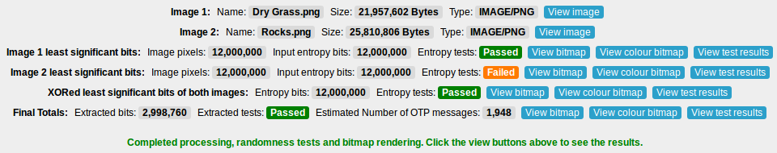 - Looking at these results, the second image which was based on a JPEG image failed the tests on the unconditioned least significant bits. This may not be a problem though as a closer look at the tests might reveal it just failed one of the tests on a 20,000 bit segment by being slightly outside of the accepted intervals. If a lot of the tests across multiple 20,000 bit segments were failing then this would be a very clear warning that the photograph is not of good quality and another should be used.
- The aim of the TRNG is that if one photo does not produce very good random test results, then there is a second photo as a failsafe. Looking at the results after XORing the least significant bits from the two images together, the tests are shown as passing. The final Von Neumann extraction step ensures that the data is uniformly random. The users should check that the final two steps which XOR the least significant bits of both images together and the Von Neumann extraction step succeed or the photos should be discarded. It does not matter so much if the unconditioned least significant bits from either image fail slightly. These minor failures can be recovered from with the final two steps. If the user finds two images that pass all the tests at every step, then this is the best possible outcome.
-
The output from each step of the TRNG can also be viewed as a black and white
bitmap[125] image or colour bitmap image which lets a user
do a simple visual analysis of the output.
People are very good at spotting patterns[126] and
visualising the random data allows them to use their eyes and brain for this purpose. If
there is any structure in the image this indicates a poor image source. It also gives a basic
visual picture of the TRNG's output.
To produce a black and white bitmap image, all the random data is converted to binary and rendered as a bitmap. A black pixel with RGB values of [0, 0, 0] indicates a 1 bit and a white pixel with RGB values [255, 255, 255] indicates a 0 bit. The height and width of the image is determined by the square root of the number of bits that can be output. This produces a square image and each pixel is rendered sequentially to fill the image row by row. The output should look something like the image below at 100% zoom.
Good image
22,500 pixels (22,500 bits)
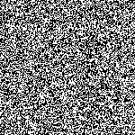Bad image
22,500 pixels (22,500 bits)
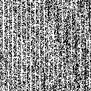
To produce a colour bitmap image, all the random data is converted to binary. For each 8 bits, this is converted to a decimal value from 0 - 255. Then for every 3 decimal values this represents the RGB values of a single pixel. The height and width of the image is determined by the square root of the number of full pixels that can be output. This produces a square image and each pixel is rendered sequentially to fill the image row by row. The output should look something like the image below at 100% zoom.
Good image
22,500 pixels (540,000 bits)
Bad image
22,500 pixels (540,000 bits)
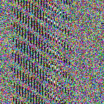
12.4 TRNG analysis and test results
For testing, a 12 MP Canon PowerShot G9[127] digital camera was used. This is a 2008 model, high-end compact digital camera which allows taking photographs in RAW file format[128]. Photos were taken in manual mode using the RAW file format to avoid using the camera's default lossy JPEG file format. The RAW files were loaded into the open source Shotwell photo manager[224] program, then converted as-shot to PNG. The original camera images were 4032 x 3024 pixels.
FIPS test suite results
Tests were run by taking photographs of different patches of sand at a beach in macro mode. These photos were then processed with the TRNG. The FIPS 140-2 tests were run on all the outputs at each stage. An example of two photos of sand that were used in the processing is presented below. The reference links contain the full size images and results.
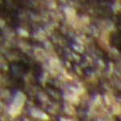
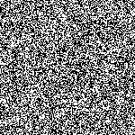
Pass
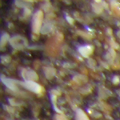
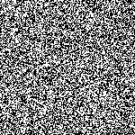
Pass
Next the least significant bits of both images were XORed together. This step does not improve the results too much both original images are of very good quality. However it can be a very good improvement if one of the images is poor quality.

{kind=link}
Next the resulting bits were run through the Basic Von Neumann Extractor. After this step the data should be uniformly random.
NIST test suite results
Next, over 40 photographs of sand were tested. A few of the photographs that did not pass the initial FIPS 140-2 tests for all steps were replaced. The ones that did pass the tests were combined together into larger binary files of approximately 15 MB each.
The first test suite was NIST SP 800-22[248]. The tests were done on the least significant bits (LSBs), the least significant bits of images XORed together (XORed LSBs) and the results after Basic Von Neumann extraction (VNE). The results are presented below:
| LSBs | XORed LSBs | VNE | |
|---|---|---|---|
| Full results | link[242] | link[243] | link[244] |
| Total bits tested | 121927680 | 121927680 | 112787840 |
| Total of 0 and 1 bits | 60944569 – 60983111 | 60964217 – 60963463 | 56393688 – 56394152 |
| Number of bits difference | 38542 | 754 | 464 |
| Percentage of 0 and 1 bits | 0.499841 – 0.500158 | 0.500003 – 0.499996 | 0.499997 – 0.500002 |
For testing the unconditioned least significant bits the full number of bits was divided into 8 bitstreams. Of these bits only a few of the bitstreams had failures. For most, 8/8 bitstreams passed, however there were a few that had 7/8 bitstreams pass and a couple with 5/8 or 6/8 bitstreams that passed. For the results in the XORed least significant bits, this was tested as one bitstream and mostly passed except for a few minor failures in the NonOverlappingTemplate test. After the Basic Von Neumann extraction which was tested on one bitstream, the results were the strongest.
ENT and Diehard test suite results
For the next tests. the binary files were uploaded to the CAcert Research Lab Random Number Generator Analysis site[222]. This site performed an independent test of the random data against the ENT and Diehard test suites[223]. It was important to test the data at each step of the TRNG, including the unconditioned and conditioned data. The site required a minimum of 12 MB of random data in order to process the files so enough photos were processed to meet this requirement. The results are presented below:
| LSBs | XORed LSBs | VNE | |
|---|---|---|---|
| CAcert full results | link[225] | link[226] | link[227] |
| Entropy (->8) | 7.999989 | 7.999989 | 7.999989 |
| Birthday Spacing | 0.124069 | 0.785778 | 0.090422 |
| Matrix Ranks | 0.135 | 0.718 | 0.149 |
| 6x8 Matrix Ranks | 0.039 | 0.073 | 0.456 |
| Minimum Distance Test | 0.535812 | 0.560551 | 0.894059 |
| Random Spheres Test | 0.008233 | 0.816425 | 0.646940 |
| The Squeeze Test | 0.069099 | 0.343447 | 0.375119 |
| Overlapping Sums Test | 0.431508 | 0.010005 | 0.707685 |
- LSBs – This was the result from Step 3 of the TRNG. This was the unconditioned least significant bits of 10 images concatenated together into a 15 MB binary file.
- XORed LSBs – This was the result from Step 4 and 5 of the TRNG. This was the least significant bits of 10 unique images concatenated together and then XORed with the least significant bits of another 10 unique images concatenated together. These 20 images produced a 15 MB binary file.
- VNE – This was the result from Step 6 of the TRNG. This was the least significant bits of 20 unique images concatenated together and then XORed with the least significant bits of another 20 unique images concatenated together. The resulting data was then run through the Basic Von Neumann Extractor. These 40 images produced a 15 MB binary file.
There was a minor note on the Random Spheres Test after testing the unconditioned least significant bits. This was detected as 'potentially deterministic', however the test did not fail completely. All of the files passed all the other statistical tests without any problems.
Other photograph options
Tests were also run on various other things in nature. All the unconditioned least significant bits from these photographs passed the FIPS 140-2 tests. These are the best options for photographs as they are constantly changing. Examples of these are shown below:
Bark
Berries
Clouds
Flower
Grass
Leaves
Plants
Rocks
Sand
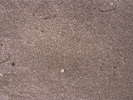
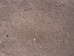
Shore
Water
Waves
Taking photographs of static things also worked well and the unconditioned least significant bits passed all the FIPS 140-2 tests. These are less optimal photograph sources however as they are static, which means only the lighting conditions and direction of the photograph will vary in subsequent photographs. Examples of these are shown below:
Carpet
Concrete

Roughcast

Stone
Wood
Dark frame options
Results that did not work very well were dark frames where photographs were taken with the lense covered to simulate a lense cap being on. The data was not strong enough to pass most of the FIPS 140-2 tests. In testing there was some noise on the least significant bits and the pixels were not completely black (0, 0, 0), but the resulting data was far from uniformly random. An example is shown below:
Dark frame
In testing it required the least significant bits from four dark frame photographs to be XORed together to be strong enough to pass the FIPS 140-2 tests. Comparing this to the regular photographs tested above, they only required the least significant bits of a single photograph to pass the tests so they should be preferred compared to dark frame photographs.
These results differ from the results in the two papers[215][216] mentioned earlier which suggested using a dark frame to capture the thermal noise in the camera. This can likely be attributed to the different methodology. It can be shown that letting in a small amount of light into the frame and taking a photograph of a static cream painted wall was good enough to let more noise onto the camera sensor and produce a strong result for a single frame that passed the FIPS 140-2 tests. An example is shown below:
Painted wall
Testing was also done by taking photographs with a Logitech C920, which is a high end webcam capable of recording video in high definition (1080P). A regular laptop webcam with 2MP was also tested. In both cases, the test results were similar to the Canon G9 and the least significant bits of all images passed the FIPS 140-2 tests.
Summary
In summary, the best results are achieved using the macro mode on a digital camera and taking close-up shots of things like sand. Shooting a variety of things like rocks, trees or water can also give good results. Users can experiment taking photos of various things in nature on their own. Users should take care to verify the unconditioned random data passes the tests from FIPS 140-2. This will give reasonable confidence for using it as one-time pads..
With this TRNG and a single 12 MP photo, it is possible to produce enough random data for approximately 1980 messages. For a group of two people this would be 990 messages per person which is enough to last for a reasonable period of time. If more messages are required then users can can generate multiple sets of one-time pads and load additional sets as necessary when they run out. It is also possible to concatenate the random data from multiple sets together using a tool included in the program. The only limit will be the amount of local storage that can be used in the browser.
13 Pad storage and exporting data
After the one-time pads have been created, they must be exported separately for each user. Part of this process automatically determines who will be sending with what one-time pads. The one-time pads are divided up equally amongst the group members and allocated to each user for sending. This prevents one user from accidentally sending with another user's allocated one-time pads, causing a two-time pad situation and allowing for cryptanalysis. All users get read access to the other group member's one-time pads, so when a message is received from another user they can decrypt it.
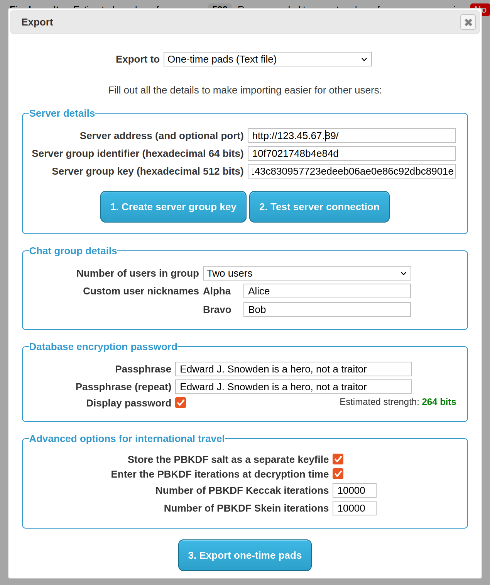
- This screen contains all the details that will be saved to each export file for each chat group user. The person creating the chat group should input the server address and API key here so that when other users import the file they do not need to do any additional configuration. All they need to do then is load the one-time pads into their browser and start chatting.
- A server API key can be generated from this screen. The program effectively takes 512 bits from the start of the extracted random data and uses it as the key. This 512 bits is now no longer available for use as a one-time pad. This API key is manually loaded up into the server's config file by the user. After this the user can test the connection to the server to make sure everything is set up correctly.
- The user can also define how many users will be in the chat group. They can customise the user's name or nickname next to the call sign. The custom nickname is kept locally and stored with the one-time pads. This way each chat group user has the same set of names and knows who is in the conversation. The custom nickname is not sent over the network, only the call sign (alpha, bravo etc) is sent as part of each network request so the server can send/receive messages for that user. This means only the real users know who is talking to who. If there are multiple people and chat groups around the world using the same protocol and different servers, then it makes traffic analysis even more difficult.
- There are 2 export options for using the one-time pads with the program. Export to clipboard lets the user copy/paste the pads from memory into wherever they want to put them. Export to text file pops up a save dialog to save the pads to a text file on their filesystem or portable storage media.
- Saving to removable media such as a CD, DVD, MicroSD, SD card or USB drive will be convenient and portable. Flash memory is at least small and compact which means the user can conceal, destroy or get rid of it quickly and easily. The most secure option may be to use CDs/DVDs which can be written once, transferred to each user, then destroyed. The most convenient option is to get a USB thumbdrive, with a portable version of Firefox[79] loaded on it. Then save the one-time pads in there as well. Load up Firefox and then load the one-time pads from inside it. Now the program is portable and the user can take it with them on a keyring, run it from any trusted computer (e.g. home or work) and stay in contact wherever they are.
- Hard drives and flash memory are difficult[131] to remove data from quickly and securely. It is best if sensitive data like encryption keys do not get written to the disk in the first place. The program allows for the one-time pad database to be encrypted and authenticated before transport. This is detailed in full in the next section.
-
The password/passphrase used should have at least 256 bits of entropy for transport which is
estimated to be 41 ASCII characters. In version 2.0 the database will be encrypted all the
time so users may opt for a shorter password for faster access on their mobile devices.
The password strength estimator calculates a rough estimate of the password strength in bits
as the user is typing. Password characters are assumed to be drawn uniformly randomly among the
most commonly used characters on a standard US keyboard. This is calculated as uppercase A-Z
(26 characters) plus lowercase a-z (26 characters) plus numbers 0-9 (10 characters) for a
total of 62 characters. This will produce a more conservative entropy estimate than if special
characters were included as well (i.e. the full 95 ASCII printable characters). The formula
will also take into account the
Password Based Key Derivation Function (PBKDF)[28] iterations
which roughly increases the security in bits by log2( Iterations )
e.g. log2( 10,000 ) which is approximately 13~ bits. The full
formula for calculating the entropy of the password in bits is as follows:
Entropy Bits ← ( Number of Password Characters ⊗ log2( 62 )) + log2( Number of PBKDF Iterations ).
14 One-time pad database encryption and authentication
The program can encrypt and authenticate the one-time pad database prior to export and transportation to other chat group users. The program uses a cascade of two strong stream ciphers for encryption and a cascade of two modern MAC algorithms for authentication. This provides additional assurances such as:
- The database has not been tampered with in transit. An attacker cannot replace the one-time pads with ones that they already know which would allow covert surveillance, set all the one-time pads to zero bits which would nullify the encryption, subtly duplicate the one-time pads in the database which would allow for two-time pad cryptanalysis, or swap pads between users which would cause indecipherable messages for other users in the group.
- The database is not easily readable if stolen or seized in transit. A computationally unbounded adversary could in theory break the cascade encryption after many decades of brute force attack with a quantum computer, but this is very unlikely. If a user knew that their one-time pad database was stolen or seized (e.g. at an international airport) then they would notify the other chat group users to stop using that set of one-time pads immediately and switch to a different set. Then only the small number of messages which had been sent since one-time pad generation until that point in time would be compromised. Because only a small number of messages would have been sent during this time and the database is very difficult to crack, then this reduces the likelihood an attacker would even try mounting a brute force attack.
- After successful transportation of the one-time pads without interception or tampering, the database can be quickly deleted and the rewritable transport media (e.g. MicroSD card, SD card, USB drive) can be re-purposed for something else which would overwrite the database eventually anyway. Because an attacker does not even have the encrypted one-time pad database, it is not absolutely necessary to secure erase the media or destroy it (e.g. write once CD, DVD media) unless absolute security is required.
In version 2.0 of the program, which is currently in development, the same encryption will be used to secure the database as it resides on the client devices. Pads will be decrypted as they are needed, used to encrypt a message, then deleted from the database. The program does not currently provide any steganography for transporting the database, so if this is needed in the near future it is advised to use a TrueCrypt 7.1a hidden volume[132][133] and store the one-time pad database inside it. If an attacker forces the user to reveal the password they can reveal the outer volume password which would reveal decoy files, and they would still have plausible deniability that a hidden volume containing the one-time pads does not exist.
14.1 Cascade database encryption
To encrypt each one-time pad in the database a cascade of two strong, reputable stream ciphers is used. The ciphers are the Advanced Encryption Standard (AES)[134] in Counter Mode[135] (AES-CTR) and Salsa20[136] with the full 20 rounds. AES, which is based on the Rijndael algorithm by Vincent Rijmen and Joan Daemen, won the Advanced Encryption Standard competition[137]. A reduced 12 round variant of Salsa20 (Salsa20/12) by Daniel J. Bernstein was selected for the eSTREAM software portfolio[138]. The full 20 round variant of Salsa20 was chosen for additional security. Two random 256 bit keys are generated using the TRNG at export time. One key is used for AES-CTR and the other for Salsa20. A different nonce is used for each one-time pad to be encrypted in the database. The design Exclusive ORs (XORs) the AES-CTR keystream and the Salsa20 keystream together then XORs the combined keystream with the plaintext one-time pad.
The reason a cascade of two stream ciphers is used is because there may be secret cryptanalytic techniques against a cipher such as AES when it's used to encrypt something on its own. A recent publication of the Snowden documents revealed that NSA have their own in-house (non public) cryptanalytic techniques against AES and other ciphers[18]. While a trivial reversal of a strong cipher without any additional information is highly unlikely and would be indicative of the algorithm being very weak, it may be more likely that a single encryption algorithm becomes vulnerable[140] to NSA when they have access to known plaintext[139] or chosen plaintext[141] encrypted by the algorithm as well.
With a stream cipher cascade, the separate keystreams are XORed together. There is no way to determine which bits belong to each cipher's keystream if each cipher is suitably strong on their own. Even if there is a cryptanalytic break in AES, an attacker does not have access to the raw keystream created by the AES algorithm because there is still plaintext and the Salsa20 keystream mixed in with it. Even if an attacker knows a lot of the plaintext they still won't be able to decrypt the AES layer of encryption because the layer underneath is a random Salsa20 keystream which they do not know. Likewise if they tried to decrypt the Salsa20 encryption layer first, the next layer is a random AES keystream so they would not even know when they have decrypted the first layer correctly. The best remaining attack against a stream cipher cascade may be a brute force of both keys which would take a very long time.
The following describes the encryption for the database:
Key1 ← A 256 bit random key for AES-CTR generated by the TRNG
Key2 ← A different 256 bit random key for Salsa20 generated by the TRNG
Nonce1 ← A unique 96 bit nonce for AES-CTR, changing for each database row (one-time pad) to be encrypted
Nonce2 ← A unique 64 bit nonce for Salsa20, changing for each database row (one-time pad) to be encrypted
Counter1 ← A 32 bit counter for AES-CTR, starting at 0 for each database row and incrementing by 1 for each block being encrypted
Counter2 ← A 64 bit counter for Salsa20, starting at 0 for each database row and incrementing by 1 for each block being encrypted
One-Time Pad ← The last 1480 bits of the one-time pad to be encrypted and stored in the database. The public 56 pad identifier at the beginning is not encrypted.
Keystream1 ← AES-CTR( Key1, Nonce1, Counter1 )
Keystream2 ← Salsa20( Key2, Nonce2, Counter2 )
Row Cascade Encryption ← Keystream1 ⊕ Keystream2 ⊕ One-Time Pad
Row Cascade Decryption ← Ciphertext One-Time Pad ⊕ Keystream2 ⊕ Keystream1
Key2 ← A different 256 bit random key for Salsa20 generated by the TRNG
Nonce1 ← A unique 96 bit nonce for AES-CTR, changing for each database row (one-time pad) to be encrypted
Nonce2 ← A unique 64 bit nonce for Salsa20, changing for each database row (one-time pad) to be encrypted
Counter1 ← A 32 bit counter for AES-CTR, starting at 0 for each database row and incrementing by 1 for each block being encrypted
Counter2 ← A 64 bit counter for Salsa20, starting at 0 for each database row and incrementing by 1 for each block being encrypted
One-Time Pad ← The last 1480 bits of the one-time pad to be encrypted and stored in the database. The public 56 pad identifier at the beginning is not encrypted.
Keystream1 ← AES-CTR( Key1, Nonce1, Counter1 )
Keystream2 ← Salsa20( Key2, Nonce2, Counter2 )
Row Cascade Encryption ← Keystream1 ⊕ Keystream2 ⊕ One-Time Pad
Row Cascade Decryption ← Ciphertext One-Time Pad ⊕ Keystream2 ⊕ Keystream1
- The reason to encrypt each row individually rather than encrypting the entire database at once is for performance. Also in the upcoming version 2.0 of the program the database will always be encrypted on disk, so it is advantageous to only have the small keys in memory and decrypt each row as needed then delete the row.
- The keys remain the same for the entire database but the nonce changes for each database row to be encrypted. The keys for encryption and authentication are obtained from slicing the required number of bits off the beginning of the TRNG generated random data. This ensures the keys are not used for anything else and the one-time pads are generated from the remaining random data.
-
Because AES in Counter Mode does not need a random IV, a unique nonce is used for
encrypting each row. Each one-time pad has an index number in the database starting from 0
up to the number of pads in the database. One user might have index numbers from 0 - 1000 in
their set of one-time pads and the next user might have index numbers from 1001 to 2000 in
their set. This ensures there is a unique index number for each row in the database. This
number is converted to hexadecimal and left padded with 0 bytes (
00in hexadecimal) up to 96 bits in length. The block counter for AES is 32 bits in length starting at 0 (00000000in hexadecimal) for each row and increments by 1 for each subsequent block being encrypted. -
The nonce for Salsa20 is 8 bytes, so the pad index number is is converted to hexadecimal
and left padded with 0 bytes (
00in hexadecimal) up to 64 bits in length. The block counter for Salsa20 is also 8 bytes starting at 0 (0000000000000000in hexadecimal) for each row and increments by 1 for each subsequent block being encrypted. - The first 56 bits of a one-time pad is the pad identifier which is public and used to lookup the correct pad in the database when another user sends a message. The pad identifier is not encrypted and removed prior to encryption so only the remaining 1480 bits of the random pad are encrypted. This removes any remaining known plaintext for an attacker if they attempt to decrypt one of the one-time pads.
-
There is some pad database information which is stored in the client database as well
(program version, custom user preferences, server address, server key, user callsign and
list of group user nicknames). This is JSON encoded to a string and encrypted with the same
database keys, but the static 96 bit nonce
ffffffffffffffffffffffffin hexadecimal for AES-CTR and the static 64 bit noncefffffffffffffffffor Salsa20 is used for encryption. Because each pad index number is converted to a nonce and in the language being used integers cannot exceed 253 - 1 (9,007,199,254,740,991), this nonce cannot be accidentally be re-used for encrypting a pad, therefore it is used it to encrypt the pad database information.
14.2 Cascade database authentication
Using the safe principles of Encrypt then MAC[142][143], the program creates a MAC of the database row information including the encrypted one-time pad by using a cascade MAC. The chosen hash functions for this are Keccak-512[118] with the capacity set at 1024 (same as the finalised SHA3[144]) and Skein-512[109]. Each MAC digest is calculated independently by computing Hash(Key || Data) with independent keys for each algorithm. The resulting digests are then XORed together to hide the individual MAC digests from independent cryptanalysis in case one of the algorithms has a flaw. Keccak and Skein are newer hash functions that are not vulnerable to length extension attacks with this simple MAC construct.
The following describes the authentication for each row in the database:
MAC Key1 ← A 512 bit random key for Keccak-512 generated by the TRNG
MAC Key2 ← A different 512 bit random key for Skein-512 generated by the TRNG
Nonce1 ← A unique 96 bit nonce based on the row index number which was used by AES-CTR to encrypt the one-time pad
Nonce2 ← A unique 64 bit nonce based on the row index number which was used by Salsa20 to encrypt the one-time pad
User Callsign ← The user callsign as a string (e.g.
Pad Identifier ← The first 56 bits of the one-time pad
Ciphertext One-Time Pad ← The last 1480 bits of the one-time pad which is encrypted by AES-CTR and Salsa20
MAC1 ← Keccak-512( MAC Key1 || Nonce1 || Nonce2 || User Callsign || Pad Identifier || Ciphertext One-Time Pad )
MAC2 ← Skein-512( MAC Key2 || Nonce1 || Nonce2 || User Callsign || Pad Identifier || Ciphertext One-Time Pad )
Row Cascade MAC ← MAC1 ⊕ MAC2
MAC Key2 ← A different 512 bit random key for Skein-512 generated by the TRNG
Nonce1 ← A unique 96 bit nonce based on the row index number which was used by AES-CTR to encrypt the one-time pad
Nonce2 ← A unique 64 bit nonce based on the row index number which was used by Salsa20 to encrypt the one-time pad
User Callsign ← The user callsign as a string (e.g.
alpha, bravo etc) which this one-time pad is allocated to for sendingPad Identifier ← The first 56 bits of the one-time pad
Ciphertext One-Time Pad ← The last 1480 bits of the one-time pad which is encrypted by AES-CTR and Salsa20
MAC1 ← Keccak-512( MAC Key1 || Nonce1 || Nonce2 || User Callsign || Pad Identifier || Ciphertext One-Time Pad )
MAC2 ← Skein-512( MAC Key2 || Nonce1 || Nonce2 || User Callsign || Pad Identifier || Ciphertext One-Time Pad )
Row Cascade MAC ← MAC1 ⊕ MAC2
- The resulting MAC tag is stored along with the other information for each row. When the database is being loaded on a client machine, the program will calculate the MAC again for each database row and verify that the hash digest matches the stored MAC tag for the row. If there is a match for each row then no tampering has occurred, otherwise a warning will be shown to the user. If the warning is shown, then the user should abandon the database of one-time pads and look to transfer a new set.
- In this version of the program, the database is verified only when loading the pads initially after they have been exported and transported. Currently after the pads are verified and decrypted, the database is saved to the client PC in an unencrypted state. Running the application and browser profile from inside a TrueCrypt volume is still recommended for this release to keep the one-time pads encrypted locally on the disk. In the future, version 2.0 of the program will have the one-time pad database be fully encrypted and authenticated at all times. Each one-time pad row will need to be verified and decrypted before sending or receiving a message. The reason for why this functionality is not available in this version is that the application needs to be converted to a Single Page Application first. Currently each web page is run separately and there is no in memory data sharing between pages. Converting to a single page application will reduce code duplication and mean the master password only needs to be entered once on startup, not once for each page opened.
- The pad database information which is stored in the client database (program version, custom user preferences, server address, server key, user callsign and list of group user nicknames) is also authenticated using the same cascade MAC. This is checked before decrypting and importing the pad database information. In version 2.0 it will be verified each program load to ensure database integrity.
14.3 Database index authentication
The program also creates a MAC of the database index for each user's set of one-time pads by combining the pad index numbers for each row and then creating a cascade MAC. This ensures that the all user's one-time pads in the database have not been added, swapped, reordered, removed or otherwise tampered with.
The following describes the database index MAC:
MAC Key1 ← A 512 bit random key for Keccak-512 generated by the TRNG
MAC Key2 ← A different 512 bit random key for Skein-512 generated by the TRNG
User Callsign ← The user callsign (e.g. 'alpha', 'bravo', 'charlie' etc) of the set of pads being authenticated
Pad Index Number ← The index number of the row in the database for the user's set of pads
MAC1 ← Keccak-512( MAC Key1 || User Callsign || Pad Index Number0 || Pad Index Number1 || Pad Index Number2 || ... )
MAC2 ← Skein-512( MAC Key2 || User Callsign || Pad Index Number0 || Pad Index Number1 || Pad Index Number2 || ... )
Index Cascade MAC ← MAC1 ⊕ MAC2
MAC Key2 ← A different 512 bit random key for Skein-512 generated by the TRNG
User Callsign ← The user callsign (e.g. 'alpha', 'bravo', 'charlie' etc) of the set of pads being authenticated
Pad Index Number ← The index number of the row in the database for the user's set of pads
MAC1 ← Keccak-512( MAC Key1 || User Callsign || Pad Index Number0 || Pad Index Number1 || Pad Index Number2 || ... )
MAC2 ← Skein-512( MAC Key2 || User Callsign || Pad Index Number0 || Pad Index Number1 || Pad Index Number2 || ... )
Index Cascade MAC ← MAC1 ⊕ MAC2
- When a message is received or sent that pad is deleted from the database so the pad index MAC needs to be updated every time a new message is received or sent. This functionality will be added in version 2.0 when the database will be encrypted and authenticated at all times. At the moment in this version, the full verification of the index is only performed as part of the initial importing of the one-time pads after transportation. This is mainly to verify that the transfer took place without tampering. Version 2.0 will be much more comprehensive and ensure that the database integrity and authenticity is valid at all times.
- Including the user callsign in the MAC means that an attacker cannot swap out one-time pads from one user into another user's set of pads, forcing a two-time pad situation and allowing cryptanalysis.
15Protection of database encryption and authentication keys
The actual database encryption and authentication keys which were generated by the TRNG are stored in inside the database with the rest of the other information. To protect these keys while they reside in unprotected storage a simple key wrapping[145] construction is used.
15.1Database master key derivation
To encrypt the actual database encryption and authentication keys, a master key is created
by deriving it from a password, two salts and two separate
Password Based Key Derivation Functions (PBKDFs)[28]. The current
PBKDFs are a temporary measure until there is library support for
Argon2[151] which was the winner in the
Password Hashing Competition[152]. A good fallback
solution would have been to use bcrypt[153] or
scrypt[154] which use a lot of memory as well but there is no
verifiable library support for these functions in the programming language being used.
The following describes the cascade PBKDF construction:
PBKDF-Keccak ← A PBKDF based on the Keccak hash function with a 512 bit output
PBKDF-Skein ← A different PBKDF based on the Skein hash function with a 512 bit output
Password ← A strong password/passphrase entered by the user
Salt ← A 1536 bit random salt generated by the TRNG
Keccak Iterations ← The number of iterations to be performed by the Keccak PBKDF with the default set at 10,000
Skein Iterations ← The number of iterations to be performed by the Skein PBKDF with the default set at 10,000
Keccak Salt ← Salt || Keccak iterations
Skein Salt ← Salt || Skein iterations
Derived Key A ← PBKDF-Keccak( Password, Keccak Salt )
Derived Key B ← PBKDF-Skein( Password || Derived Key A, Skein Salt )
Master Key ← Derived Key A ⊕ Derived Key B
PBKDF-Skein ← A different PBKDF based on the Skein hash function with a 512 bit output
Password ← A strong password/passphrase entered by the user
Salt ← A 1536 bit random salt generated by the TRNG
Keccak Iterations ← The number of iterations to be performed by the Keccak PBKDF with the default set at 10,000
Skein Iterations ← The number of iterations to be performed by the Skein PBKDF with the default set at 10,000
Keccak Salt ← Salt || Keccak iterations
Skein Salt ← Salt || Skein iterations
Derived Key A ← PBKDF-Keccak( Password, Keccak Salt )
Derived Key B ← PBKDF-Skein( Password || Derived Key A, Skein Salt )
Master Key ← Derived Key A ⊕ Derived Key B
- The first PBKDF is PBKDF2[146] with the Keccak-512 hash function. The output key size is set at 512 bits. A 1536 bit random salt which was generated by the TRNG is used. The default number of iterations is set at 10,000 which takes about 8 seconds to compute on a single core of an Intel Core i5 running at 3.3 GHz.
- Note that Keccak can be used in conjunction with HMAC[147] which is what PBKDF2 uses internally. The reason to use Keccak instead of SHA-2[148] or SHA-1 is because it is a newer hash function and it is not designed by the NSA. Anything designed by the NSA is avoided by this program in case it has deliberate secret weaknesses that are unknown to the academic community. An algorithm designer is in the best position to design an algorithm with a subtle weakness. In the case of SHA-2 a weakness may not be discovered for many years if academia is well behind the state of the art in cryptography. For SHA-1 it barely lasted a few years before needing to be phased out due to significant flaws. We know at one point the NSA were 20 years ahead in cryptography[149] when they knew about differential cryptanalysis before anyone else. They are likely still ahead by a large margin. Using Keccak which was the winner in an open competition and which has a design which is completely open is considered much safer. In comparison to SHA-2, Keccak should provide better entropy in the derived key, however it may be a lot faster in hardware which would provide a slightly better advantage for an attacker performing a brute force attack. However the main attacker to be considered is the NSA and we can reasonably assume they have dedicated ASICs[150] and other hardware for cracking password hashes which were derived using the most commonly used PBKDFs simply because everyone in the world is using those algorithms. By using the newer Keccak algorithm this essentially forces the NSA to expend more money building new dedicated ASICs or re-engineer their supercomputer code just to crack an encrypted database created by this program. Even then they would still need physical access to the encrypted database so they might not even bother trying.
- The second PBKDF uses the Skein hash function. The output key size is set at 512 bits. The same 1536 bit random salt which was generated by the TRNG is used. The default number of iterations is set at 10,000 which takes about 5 seconds to compute on a single core of an Intel Core i5 running at 3.3 GHz.
-
The Skein PBKDF method is described in
Section 4.8 of The Skein Hash Function Family specification
document. Quoting the document:
"The application stores a random seed S, asks the user for a password P, and then performs a long computation to combine S and P." ... "An even simpler PBKDF is to simply create a very long repetition of S and P; e.g., S || P || S || P || S ..., and hash that using Skein. (Any other optional data can also be included in the repetition.) This approach is not ideal with a normal hash function, as the computation could fall into a loop. But in Skein, every block has a different tweak and is thus processed differently." -
There are important reasons for this cascade construction, in particular the aim is to
protect against failures in at least one of the algorithms for true long term security:
- An adversary cannot parallelize the workload by computing both derived keys at the same time because Derived Key B depends on the result of Derived Key A.
- The entropy in the Master Key is not lowered if PBKDF-Keccak is weak because the Password and Salt are also included in PBKDF-Skein.
- The entropy in the Master Key is not lowered if PBKDF-Skein is weak because it is XORed with Derived Key A.
- The Master Key is at least as strong as the strongest function and retains the entropy in the Password and Salt even if one of the functions is weak or compromised.
- It is hard to perform cryptanalysis on the output of each function individually because the output is XORed by random data from the other function.
- The user can choose not store the number of Keccak or Skein iterations with the rest of the database. The user would remember the iterations or write them down separately on a piece of paper. This may be useful if passing through international airport security and there is a high likelihood of the data being confiscated and copied. This forces an attacker with only the database to try every iteration count for every password permutation. To counter an attacker simply caching the results of previous iteration counts and running the PBKDF on one password at a time, the number of iterations are appended to the end of the Salt at runtime. This forces the attacker to do the full PBKDF iterations for every reasonable iteration count the user could have chosen e.g. 1 - 10,000+ then repeat that for all possible password permutations.
- For added security an option exists in the user interface to use custom iteration counts. The user can decrease the number of iterations for slower portable devices and use a longer password to compensate. The user may also choose to increase the iteration counts to make the database more resilient to attack. The default of 10,000 iterations for each of the PBKDFs is a good balance between strength and slow speed of the JavaScript runtime engine.
- The total length of the Salt is the same length of all the database keys (256 bits AES-CTR encryption key + 256 bits Salsa20 encryption key + 512 bits Keccak MAC key + 512 bits Skein MAC key) which adds up to 1536 bits. Normally passwords do not contain much entropy, so the Salt which was randomly generated by the TRNG is used as a backup to add additional entropy to safely secure the database keys.
- Another option exists in the user interface to store the 1536 bit Salt as a separate keyfile. The advantage of this is to store the keyfile on a separate storage device (e.g. MicroSD card) or written down on a piece of paper which can be easily hidden if the database is at risk of being compromised in transit. If an attacker can confiscate or steal the primary device (e.g. notebook PC) which has the encrypted database but cannot find the keyfile as well then it is practically impossible to crack the database encryption in any reasonable timeframe. Future versions may allow this keyfile to be hidden inside an image file using steganography.
15.2Sub key derivation
Four sub keys are derived from the master key and are used to encrypt the actual database encryption and authentication keys. This is basically a simple KDF2[156] construction but uses a cascade of two hash functions for each counter value to protect against flaws in either algorithm. The newer hash functions used are already secure against length extension attacks[157] and do not need HMAC[197]. The following describes the cascade sub key derivation:
Master Key ← The 512 bit master key derived from the cascade PBKDF used earlier
Counteri ← A 32 bit numeric counter to be combined with the hash function e.g. (
Derived Key1 ← Keccak-512( Master Key || Counter1 ) ⊕ Skein-512( Master Key || Counter1 )
Derived Key2 ← Keccak-512( Master Key || Counter2 ) ⊕ Skein-512( Master Key || Counter2 )
Derived Key3 ← Keccak-512( Master Key || Counter3 ) ⊕ Skein-512( Master Key || Counter3 )
Derived key4 ← Keccak-512( Master Key || Counter4 ) ⊕ Skein-512( Master Key || Counter4 )
Counteri ← A 32 bit numeric counter to be combined with the hash function e.g. (
00000001, 00000002, ... in hexadecimal)Derived Key1 ← Keccak-512( Master Key || Counter1 ) ⊕ Skein-512( Master Key || Counter1 )
Derived Key2 ← Keccak-512( Master Key || Counter2 ) ⊕ Skein-512( Master Key || Counter2 )
Derived Key3 ← Keccak-512( Master Key || Counter3 ) ⊕ Skein-512( Master Key || Counter3 )
Derived key4 ← Keccak-512( Master Key || Counter4 ) ⊕ Skein-512( Master Key || Counter4 )
-
A simple KDF2 construct to get encryption and authentication keys from a master key would
apply the hash function twice. Once with the Master Key and a unique Counter
(e.g.
01) to make an encryption key, and again with the Master Key and another unique Counter (e.g.02) to gain a unique MAC key. If the keys used for encryption is compromised it is computationally hard to find a pre-image for the one-way hash function to determine the Master Key or the derived MAC key. Similarly if the MAC key is compromised it is hard to reverse the process to find the Master Key or encryption key. This cascade construct performs two hashes for each derived key, once using Keccak on the Master Key and unique Counter, then again with the Skein algorithm and another unique Counter. Finally it XORs the resulting random hash digests together to produce the derived key. This adds additional assurances that the derived key will not be easily reversed if there is a flaw in either algorithm discovered in the future. - The resulting derived keys are 512 bits in length. The first and second derived keys are used for AES-CTR and Salsa20. Because the key lengths for these encryption algorithms are only 256 bits in length, these two derived keys are truncated to just the first 256 bits. The third and fourth derived keys which are used for Keccak and Skein remain at 512 bits.
15.3 Encryption and authentication of database keys
The following describes the encryption and authentication of the actual database keys using the derived keys from earlier:
Database Keys ← The actual AES-CTR, Salsa20, Keccak and Skein database keys, concatenated together
Nonce1 ← A static 96 bit nonce for AES-CTR (
Nonce2 ← A static 64 bit nonce for Salsa20 (
Counter1 ← A 32 bit counter for AES-CTR, starting at 0 and incrementing by 1 for each block being encrypted
Counter2 ← A 64 bit counter for Salsa20, starting at 0 and incrementing by 1 for each block being encrypted
Keystream1 ← AES-CTR( Derived Key1, Nonce1, Counter1 )
Keystream2 ← Salsa20( Derived Key2, Nonce2, Counter2 )
Encrypted Database Keys ← Keystream1 ⊕ Keystream2 ⊕ Database Keys
MAC1 ← Keccak-512( Derived Key3 || Encrypted Database Keys )
MAC2 ← Skein-512( Derived Key4 || Encrypted Database Keys )
Cascade MAC ← MAC1 ⊕ MAC2
Nonce1 ← A static 96 bit nonce for AES-CTR (
000000000000000000000000 in hexadecimal)Nonce2 ← A static 64 bit nonce for Salsa20 (
0000000000000000 in hexadecimal)Counter1 ← A 32 bit counter for AES-CTR, starting at 0 and incrementing by 1 for each block being encrypted
Counter2 ← A 64 bit counter for Salsa20, starting at 0 and incrementing by 1 for each block being encrypted
Keystream1 ← AES-CTR( Derived Key1, Nonce1, Counter1 )
Keystream2 ← Salsa20( Derived Key2, Nonce2, Counter2 )
Encrypted Database Keys ← Keystream1 ⊕ Keystream2 ⊕ Database Keys
MAC1 ← Keccak-512( Derived Key3 || Encrypted Database Keys )
MAC2 ← Skein-512( Derived Key4 || Encrypted Database Keys )
Cascade MAC ← MAC1 ⊕ MAC2
- After encryption and authentication, the encrypted database keys and the Cascade MAC are stored in the database. To decrypt the database, a user will enter their password, load the keyfile and set the number of iterations. It will perform the same steps above to generate the derived Keccak and Skein keys, recreate the MAC against the stored encrypted database keys, then match that against the stored MAC. Any incorrect match may mean an incorrect password, keyfile or number of iterations used. Alternatively, if the password, keyfile or number of iterations is correct it could indicate a more serious matter such as database corruption or that someone has tampered with the database.
16 Using HTML5
Thomas Ptacek's article, Javascript Cryptography Considered Harmful[158] raises a valid point about JavaScript code being delivered by the web server being insecure against MITM attacks. The article in general however is now outhated and blanket statements saying that all JavaScript cryptography is harmful is misleading and inaccurate. In reality, there are sensible[159] and secure[160] solutions to the problems raised and all of his other concerns have been reasoned and mitigated[161] as well.
In summary, most points they made are not applicable for this program due to the fact that the
source code is downloaded as a signed .tar.gz[162]
archive file and users are expected to verify the file's GnuPG[245]
signature with the one from this website to ensure its authenticity. From there the code should
be run locally from the machine by going to the directory and running index.html which
will load the website and code into the browser. This means all
code is always running locally from the local hard drive and the web address will be similar to
file:///media/truecrypt1/jericho/client/index.html. All the executable code is self
contained and does not rely on any server delivered JavaScript at all. It essentially becomes a
regular client side application except it runs inside a browser to make use of the browser's
rendering and JavaScript runtime engines. This itself mitigates the majority of the problems
the Matasano Security article raised.
HTML5 has more advantages than disadvantages. It's easier and faster to develop with. New APIs allow for cryptography[115], persistent database storage[163], messaging[164] and file management[165]. Browsers are first in line for security updates and the best ones are open source and trustworthy. People rely on browsers to have good security to do their Internet banking and shopping online. The source code does not need to be compiled. Users or security researchers can verify the source code being run live in the browser using Chromium or Firefox built-in Web Development tools or with browser add-ons like Firebug[166]. This allows them to verify the code is doing exactly what it should be. HTML5 is cross platform, one code base can literally run on Windows, Linux, Mac, phones and tablets simply with the latest web browser. Newer projects such as Electron[246] or PhoneGap[247] allow the packaging of HTML5 code into a native app for various platforms. One of the goals of the project is to get a truly secure chat program functioning on an open hardware platform and an open operating system like Firefox OS[167]. This is a true open source OS for smartphones and tablets from a reputable organisation that believes that individuals' security and privacy on the Internet is fundamental[168].
Currently this program has been tested to work in the latest versions of the open source browsers Firefox[169] and Chromium[170]. Some of the other popular browsers have not implemented the Web Crypto API yet. The layout is responsive and will work on desktops and tablets. Some more work and testing is still required to get it working nicely on mobile. In particular a method to load the one-time pads into the program using later versions of Android. Using Firefox is recommended as they are open source and are not involved in the PRISM surveillance program[171]. Unfortunately nobody can say for sure about that with Google so the proprietary Google Chrome browser is not recommended. Firefox is still preferred in comparison to Chromium as Google were recently caught out[172] trying to backdoor it with a closed source binary which captured audio from the microphone. There's nothing stopping them from trying similar acts of subversion in future unless users are watching closely for these issues.
It is recommended to create a new browser profile[173] inside a TrueCrypt[53] volume to protect the one-time pads when they are stored inside the browser storage. In a future version of the program it will keep the one-time pad database encrypted locally at all times.
The main crypto library this program uses is CryptoJS[174]. There were some other libraries that would be good to use but they either did not work in a HTML5 Web Worker[175] which makes CPU intensive cryptographic functions take significantly longer and blocks[176] the user interface thread, or their outputs couldn't be verified from the reference test vectors. It is important to verify that the code can produce the same hash outputs as the test vectors from the specification documents. This ensures the program is not using a faulty or backdoored version of the algorithm that gives incorrect results.
17 REST API using JSON
- The client browsers communicate to and from the server using JSON and the REST API on the server. The server side code is currently written for the latest version of PHP 5.x using best security practices for protection against SQL injection[179] and other attacks. This will likely be rewritten in a different language in the next release e.g. NodeJS[179] to have a common cryptographic library base across the client and server. This will allow for a simple integration of the data encryption between the clients and server in order to hide the metadata[180].
-
The server sends CORS[177] HTTP headers so that the client
browsers can connect and make a cross-origin request. This is
needed because the program is run locally from the
file:///location and not served by a webserver. If the JavaScript code was served from a web server it could let an attacker perform a MITM attack and alter the code, this could then make the user send unencrypted messages and they would not be any wiser. - For now the browsers use an AJAX[181] request to send/receive data to/from the server. The reason for this is that the chat can be delayed like email (encrypted messages remain on the server until they are received), or real-time if users are connected at the same time. If a user is connected it will check for new messages from the server every 3 seconds which is fast enough to appear as real-time and does not stress the server too much.
A summary of the request/response protocols are shown below:
17.1 Send message
This is the request the client makes when sending a message.

17.2 Send message server response
This is the response the server makes after it has received a request to send a message.

17.3 Receive messages request
This is the request each client makes every 3 seconds. This will get any new messages from the server for the user making the request.
17.4 Receive messages response
This is the response the server will make after receiving a request from a client for retrieving new messages.
17.5 Initiate self destruct request
This is the request a client makes if they want to wipe the all the other chat group user's local one-time pad databases. It is very disruptive and designed for use only in an emergency. This command is sent encrypted and authenticated via the secure message channel. This is so only a valid user with the set of one-time pads can trigger an auto nuke. An attacker with access to the server cannot change anything to trigger the chat group users to delete their local databases in order to disrupt communications.
To trigger the request, the user will visit a separate screen in the user interface and click
a button. The client will automatically send a regular message with the string code
init auto nuke. This will be encrypted with one of the one-time pads, authenticated
with the MAC and sent to the server like a regular message. The initiating user's current local
database of one-time pads will then be wiped and their screen cleared.
17.6 Self destruct initiated response
If a chat group user is checking for new messages and an authentic message comes through with the
code init auto nuke, instead of continuing to receive and process new messages, the
user's client will show a notification that the self destruct has been initiated by the user who
initiated it, then the program will immediately wipe their local database of any data and clear
the screen of any sent or received messages.
After all users have had their local databases wiped, the server database of one-time pads can be cleared by the server administrator. There is no real risk in leaving the encrypted messages on the server for a longer period of time as every one-time pad encrypted message has information-theoretic security and plausible deniability.
18 Message encoding
Each one-time pad is made up of 192 bytes which is 384 hexadecimal symbols or 1536 binary digits. See the table below for more information:

Each message is made up of three main parts, the pad identifier, the message parts and the message authentication code. The one-time pad is used to encrypt the message parts and the MAC tag.

This can be further broken down to the individual message parts. See below for the length of each part:

- At the moment the program only supports messages typed using the ASCII printable character set[182]. This is all the characters that can be seen on a standard US keyboard. In practicality this limits the languages that can be used to English and ones that use the basic Latin alphabet[183] e.g. Dutch, German, French, Indonesian, Portuguese and Spanish but without the diacritical marks[184]. This is for ease of development at the moment and the program will support other languages with proper UTF-8[185] encoding and decoding in the future.
- All messages that are sent/received are encoded to hexadecimal format first which is just stored in a normal JavaScript string. This is to make transport using JSON easier rather than trying to send UTF-8 encoded data over the wire. A hexadecimal symbol (Nibble[188]) is 4 bits, and two hexadecimal symbols makes 8 bits (one Octet/Byte[189]) and can be represented as a single ASCII character.
- The Pad identifier is the first 7 bytes (56 bits) from the one-time pad. This identifies to the receiver which pad should be used to decrypt the message. This is used rather than sending the sequence number of the one-time pad to remain in sync with the other users as that could reveal to an attacker the number of messages sent so far.
-
The maximum message length has been set at 115 bytes (115 ASCII characters) for now. This is slightly
less than the size of a tweet[190]
(140 characters) or an SMS[191] (160 characters). This is
because generating enough random data takes a long time. Making a message length longer than that,
where the one-time pad may or may not be fully used is wasteful. If users need more than 115
characters they can simply send a second message. In future a new feature will be added to allow
a message to be spread over multiple one-time pads.
If a message is less than 115 bytes in length it is padded to the right (up to the maximum 115 bytes) with random bits generated from the Web Crypto API. This hides the actual length of the message to frustrate any cryptanalysis. For example if no padding was added and the message was simply "hi" then the ciphertext would be the same length which could aid the attacker. Of course there are a few other words with only two letters which allows for some uncertainty. However if the message is padded up to the full 115 bytes each time, then an attacker knows nothing about the true length of the message, only that it is somewhere between 1 and 115 bytes long.

- The Actual message length is the true message length without any padding. It is an aid in the decryption process so it can remove the correct number of padding bytes from the end of the message and reveal the original plaintext automatically. This field is always 1 byte in length which is enough to represent the message length. For example, if the message was 70 bytes long, then the number 70 is converted to binary and left padded (if necessary) to be 8 bits long. 8 bits can have 28 (256) possible values which represents the numbers from 0 to 255. One byte of information can store the actual message length of 1 to 115 bytes easily. The actual message length is also encrypted with one byte from the one-time pad so it is impossible for an attacker to know the actual message length without the one-time pad. An attacker only knows that the length of a message is between 1 and 115 bytes. When decrypting the message, the message length value is checked to make sure it is in the correct range. This helps avoid denial of service[207] (DOS) and/or buffer overflow attacks.
- A UNIX timestamp is sent along with the message in the Message sent timestamp field to signify when the message was sent from the sender's computer. This is converted to binary and sent with the message packet. 5 bytes are reserved for this. It could easily be 4 bytes (32 bits), but an extra byte was added to avoid the year 2038 problem[192]. This timestamp is also encrypted with 5 bytes of the one-time pad. This prevents an attacker from interfering with the date or time of the message which could be critical in some circumstances. It is also used for correctly reordering messages on the client side when retrieving multiple messages from the server. This prevents an attacker reordering messages from them gaining access to the server or by delaying server responses.
- The final part of the encoding is the MAC tag. This MAC tag is sent along with each message for authentication and integrity to ensure that the message has not been tampered with. The MAC tag is also encrypted with part of the one-time pad so it is also information-theoretically secure. The process is explained in depth further on.
19 Message encryption process
- The program first receives the plaintext message from the user from the text box when they click the Send message button.
- Then it does a lookup on the user's local database of one-time pads and selects the first available one-time pad allocated to that user for sending messages. The one-time pads for sending/encrypting messages are evenly pre-allocated and grouped under each user in the chat group e.g. alpha, bravo, charlie etc. This prevents one user from encrypting a messsage using the same one-time pad as another user.
- Once a one-time pad has been selected, it removes it from the local database and splits it into the pad identifier, the message parts and the MAC parts. The encryption process is as follows:

- In step one, the plaintext with padding, the message length and the timestamp are converted to binary and concatenated together.
-
In step two, because some of the bits of the 40 bit UNIX timestamp can be predictable, this could leave
a crib[140] for an attacker and they
could recover those few bits of the key. This however would not compromise the remainder of the plaintext
because each bit of the one-time pad is random and independent from the rest. For example, if the
timestamp was 1406440512 for
2014-07-27 at 5:55am in UTC then that would convert to binary as
00000000 01010011 11010100 10010100 01000000. If we compare another time in the future, 1503040500 for 2017-08-18 at 7:15am in UTC then that would convert to binary as00000000 01011001 10010110 10010011 11110100. The first 12 bits are the same in both timestamps even though the dates are years apart. This is because the timestamp field is larger than currently required in order to future proof the protocol. If it was the usual 32 bits then eventually there would be incorrect dates and times shown in the program after 19 Jan 2038[192].
To remove this as a possibility for being a crib, the program randomly reverses the binary message parts (including the plaintext with padding, the message length and the timestamp) depending on the second last byte in the one-time pad. It does this by converting this byte to an integer value (0 - 255), then uses that number modulo 2. This will return a random integer of 0 or 1. A one will mean the message parts get reversed while a zero will mean they stay the same. This means that every message, an attacker does not know for certain whether the timestamp is at the front or end of the message parts. They also do not know whether the true plaintext begins at the start of the message or the end. Because all users have the same one-time pad, they can reverse this transformation to get the message parts back in proper order after decryption. This transformation has a similar purpose to Russian copulation[193]. - In the third step, the XOR[48] operation is what does the encryption. Each bit of the plaintext is encrypted with a unique bit of the one-time pad. With a truly random one-time pad the encryption is unbreakable even in theory[194].
- The final step concatenates the pad identifier to the ciphertext message parts. The pad identifier helps the other users determine which one-time pad was used to encrypt the message.
- Once the message has been encrypted, the MAC is created using a random MAC algorithm that was selected and then encrypted with part of the one-time pad. This process is explained further on. The MAC is concatenated to the end of the ciphertext and sent with the message to the server. The server holds the message until all the other users have retrieved it.
20 Message decryption process
The user first checks for encrypted messages on the server that are not sent by them and have not been read already by them. This will retrieve all other messages sent by users in the same chat group. Once the encrypted messages have been retrieved by the user, the messages are marked as read on the server by them. Once all users have read the message, they are deleted from the server in a cleanup process which runs every 30 seconds. The process for decryption is generally the same as encryption but in reverse order. For each encrypted message that is received:
- The program selects the sender of the message e.g. alpha, bravo, charlie etc and does a lookup on the local database of one-time pads for that user. The program selects the pad identifier (first 7 bytes) from the ciphertext which will match the first 7 bytes from one of the one-time pads in the database. The pad identifier for each one-time pad is stored in a separate field which makes searching faster. It then retrieves the one-time pad for the message and takes off the pad identifier.
- The MAC is then decrypted with the last 64 bytes of the one-time pad. Using the ciphertext message parts, the one-time pad and the random algorithm for the MAC, the MAC is calculated. If this matches the MAC sent, then the message is valid and has not been tampered with. Decryption of the message will follow. If the message matches the MAC sent with the message then an 'Authentic' status is displayed to the user. If the message is not valid, the user is warned that tampering has occurred and the decryption process will not be attempted.
- The one-time pad message parts is then XORed with the ciphertext message parts (including the plaintext with padding, message length and timestamp). This returns the decrypted text with padding, the actual message length and the time the message was actually sent.
- Depending on the second last byte of the key, the decrypted message parts are returned to their original order (unreversed) if that transformation was made in the encryption process.
- The message length part is read and this gets the length of the actual message in bytes. Reading from the start of the plaintext message up to the message length will retrieve the actual plaintext without padding.
- The one-time pads for any messages received and verified authentic are then deleted from the user's local database.
21 Message Authentication Code
The one-time pad is vulnerable to a bit-flipping attack[195] if
not authenticated with a MAC. Therefore the program calculates and sends a secure MAC with each
message. Both users have a shared secret, which is the one-time pad for each message so the MAC
can be calculated and verified by either person. This simple MAC construction is a temporary
solution which should be fine until there is time to write a more standardised one-time MAC
implementation based on the Carter-Wegman MAC[187].
The construction of this MAC is as follows:
Random Number ← Get the last byte of the one-time pad used to encrypt the message e.g.
MAC Algorithms ← The list (array) of MAC functions available i.e.
Number of MAC Algorithms ← The number of MAC functions available i.e. 2.
Ciphertext ← The pad identifier (56 bits) and ciphertext message parts (968 bits) concatenated together.
Key ← The full one-time pad (1536 bits).
MAC Encryption Key ← The last 512 bits of the full one-time pad reserved for encrypting the MAC tag.
MAC Algorithm Index ← Random Number % Number of MAC Algorithms e.g.
MAC Algorithm ← MAC Algorithms [ MAC Algorithm Index ] e.g.
MAC Tag ← MAC Algorithm( Key || Ciphertext )
Encrypted MAC Tag ← MAC Encryption Key ⊕ MAC Tag
7f and convert it to an integer i.e. 127.MAC Algorithms ← The list (array) of MAC functions available i.e.
[Skein-512, Keccak-512]. Both produce a 512 bit output.Number of MAC Algorithms ← The number of MAC functions available i.e. 2.
Ciphertext ← The pad identifier (56 bits) and ciphertext message parts (968 bits) concatenated together.
Key ← The full one-time pad (1536 bits).
MAC Encryption Key ← The last 512 bits of the full one-time pad reserved for encrypting the MAC tag.
MAC Algorithm Index ← Random Number % Number of MAC Algorithms e.g.
127 % 2 = 1.MAC Algorithm ← MAC Algorithms [ MAC Algorithm Index ] e.g.
MAC Algorithms[1] = Keccak-512MAC Tag ← MAC Algorithm( Key || Ciphertext )
Encrypted MAC Tag ← MAC Encryption Key ⊕ MAC Tag
- For each message sent, a random MAC algorithm from a pool of algorithms is chosen to authenticate the message. This provides some protection in the case that a fundamental flaw is discovered in one of the hash algorithms in the future. It also makes message forgery more difficult as an attacker now only has a 0.5 probability to guess the correct hash algorithm that was used to authenticate each message. Currently there are only 2 hash algorithms that are used with the program due to the lack of current library support. Currently the hash functions used are the 512 bit versions of Keccak and Skein. These 512 bit MACs will provide 2256 collision resistance and 2512 pre-image resistance against regular computers. They will provide 2170 collision resistance[196] and 2256 pre-image resistance against quantum computers.
- The program first gets a random index number from an array of available algorithms, then it uses this algorithm to create the MAC. It selects the random array index by using the last byte of the one-time pad. It converts this byte to an integer value (0 - 255), then uses that number modulo the number of MAC algorithms available. Because there are only two MAC algorithms at the moment, that will return an integer of 0 or 1 which references the index of the algorithm in an array. For all possible bytes from 0 - 255 this provides an even distribution of 0 - 1 outputs.
- The process is to perform the encryption on the message parts first, then calculate the MAC from the ciphertext and use the one-time pad as the key. This provides integrity of the ciphertext and integrity of the plaintext. Also it does not provide any information on the plaintext since no structure from the plaintext has been carried into the MAC. Skein and Keccak are newer, more secure hash algorithms and do not need more complicated constructions like HMAC to prevent length extension attacks unlike hash functions based on the the MerkleDamgrd construction[198]. The MAC can be created simply by prepending the message with the key and hashing it[199][200], i.e. H( K || M ).
- Finally the MAC tag is encrypted with the last 64 bytes (512 bits) of the one-time pad. This retains the information-theoretically secure[25] properties for the MAC tag as well as the message. No attacker can know if they have successfully deciphered the encryption by brute forcing combinations of the key to create a valid MAC tag. Nor can an attacker know if they have created a successful forgery when they do not know the correct key.
22 Failsafe CSPRNG
For some functions of the program, general random bits or random numbers are needed. For these functions it is not critical to have true randomness so a strong CSPRNG[123] will suffice:
- Padding messages with random bits up to the maximum message length.
- Generating random numbers in order to send decoy messages at random intervals.
- Generating random 512 bit nonces for each server request.
Most browsers now support the HTML5 Web Crypto API
getRandomValues() function[69] which uses
the operating system's cryptographically secure random source (e.g. /dev/urandom on
Linux). The Web Crypto API could however be compromised by running a closed source operating
system (e.g. Windows or MacOS) – in which case Microsoft or Apple could have been
paid off by the NSA[68] to make it use the
Dual EC DRBG[13] by default as far as anyone in the public knows.
Or it could also be compromised by a faulty browser implementation. Or it could also be
compromised by the underlying operating system's implementation such as it uses
Intel's questionable on-chip RNG[67] (RDRAND).
No-one really has time to continually review the various browser implementations of the Web
Crypto API or the various operating system implementations of their RNGs to make sure they are
secure. So if the browser's implementation of this CSPRNG is compromised then a failsafe RNG has
been devised.
The program will use a 256 bit key, to create a keystream of random bits using the failsafe
CSPRNG Salsa20. This keystream is then XORed with the random bits returned from the Web Crypto
API.
A unique 256 bit key is generated for each user by the TRNG and exported with the user's
one-time pads upon pad creation. When they load the one-time pads, this key is also loaded into
memory.
The program will start the nonce at 0, and increment by 1 after every
request for random bits. The nonce value is persisted in the local database storage so a nonce
is never re-used even if the program is restarted. The nonce can be safely incremented to
253 - 1 (the maximum safe integer[201]
in JavaScript) without failure, but this is very unlikely to ever be reached under normal use.
23 Self destruct process
The protocol normally erases the one-time pad as soon as a message is sent. The one-time pad is also removed from a receiver's database after they have successfully received and authenticated a message. This is a more secure form of off the record chat similar to the OTR messaging protocol[202]. OTR has good principles but lacks the perfect secrecy[25] and plausible deniability[34] of the one-time pad.
One of the key features of the program is being able to trigger a duress code[204] which instantly and automatically wipe the local database of one-time pads, the other users' local databases of one-time pads and clear any messages remaining on screen.
This should be initiated in an emergency situation only. Potentially if a chat group user believes their database of one-time pads may be compromised soon, or Three Letter Agencies[203] are inbound on a helicopter assault[80] then they should initiate the self destruct. This means that all the users are no longer in possession of the decryption keys so it means they cannot be compelled to produce them under duress or in a court of law. No encryption keys means no way to decrypt past messages. Without the real encryption keys, a user under duress can easily think of any plausible plaintext message for any encrypted message and an aggressor will not know the difference. A simple way to calculate this for a one-time pad, given any ciphertext is to simply create a fake message, convert the ciphertext and fake message to binary, then XOR them together which will produce a plausible key to give to an attacker.
24 Extra security considerations
There are a number of potential attacks which are more around social engineering[205], side channel attacks, retrieving the one-time pads by other means and attacks on the server. There are ways to mitigate these issues as well.
- Keyloggers, trojans or spyware on the PC could compromise the one-time pads or chat messages. To mitigate this, the one-time pads should be generated on a clean install of an open source Operating System and a clean browser install. Running different virtual machines for different programs like Qubes OS[50] to isolate any potentially malicious programs could be effective. A clean browser install means removing all the inbuilt proprietary extensions like Java and Flash. When creating the one-time pads, the PC should be physically unplugged from any network and any wireless/bluetooth adaptors should be disabled. The pads should be saved to removable media such as MicroSD card, SD card or USB drive. The Operating System should be secure wiped from the hard drive after completion. Booting into a Linux Live CD[206] would be useful for this. For running the chat program, ideally the OS should be open source e.g. Linux and the browser software compiled from source code. Firewalls, antivirus and antispyware tools must be installed and activated. Shared computers in a library or cafe should not be used.
- An attacker could steal/copy the one-time pads as they are being delivered to the other person. The encrypted one-time pad database should be kept on a small MicroSD card, SD card or USB drive with the person at all times. Securing it in a zipped up pocket can help prevent pickpockets. If plausible deniability is needed, the one-time pads should be stored inside an encrypted hidden volume with Truecrypt or other software. If the one-time pads have been misplaced they have not been in the user's possession for a certain amount of time, they must be assumed to be compromised and fresh ones must be created. Once loaded into each device, the encrypted text file containing the one-time pads from the removable media should be erased. This leaves only one copy of the pads which is being used by the software. The software will automatically remove one-time pads as a message is received or sent.
- The server could be attacked or communications interfered with. Encrypted messages stay on the server for a short period of time until the other chat participants retrieve them from the server which is similar to email. However the requests to the server are frequent enough that if both users are connected at the same time then it behaves as real-time chat. There is potential for a nation state attacker to block communications and interfere with the transmission of encrypted messages. They will not be able to decrypt any of the messages, nor will they be able to forge or alter a message without detection due to the strong MAC. However they could block messages being received, or hack into the server and delete messages from the server, or perform a DOS type attack on communications. If an attacker like the NSA has already targeted the server there is not much that can be done about it. The best option may be to set up a new server somewhere else that they do not know about and inform chat participants of the new server address. In the meantime the standard precautions for server installs should be used e.g. setting up a firewall, blocking all ports except for port 80 which will be used by the clients to connect to the server and port 22 for SSH[208] so the administer can still log in to the server. Changing the SSH port to a non-standard port and using public key authentication could also be a consideration.
- Users will not be completely anonymous when communicating with the server. Potentially a government may intercept the highly encrypted communications going from their IP address to the server, and also from the server to the other user's IP. They may be suspicious at being unable to decrypt the messages and try tracing the IP back to its source so they can arrest the user for suspected terrorism. If everyone was using the program it would be considered normal communications so they would be less likely to target a particular individual. Users that are concerned about this could use a VPN or SOCKS proxy[209] with their browser to tunnel their connections through a server in a different country. For added protection they could always have chat conversations in a public place, e.g. cafe, library, WiFi hotspot or buy a cheap pre-pay smartphone which will allow them to tether the Internet connection to their laptop. If using a mobile phone, it would be important to go somewhere different each time and then connect to the cellular network. Also the GPS on the phone should be disabled so it is harder to triangulate their position. For complete security the main battery should be physically removed when done and a Faraday bag used to block any remote activation attempts even while it is turned off[210]. The program does not currently work with the Tor Browser Bundle[211] because they block access to the local disk, so that rules out HTML5 Local Storage use. However it is possible to configure the Tor application manually and use that as a SOCKS5 proxy with a newer version of Firefox. It may even be possible to configure Tails OS[212] to load a Firefox profile from a writable USB drive which could store and update the one-time pad database.
- Users could be forced to hand over their one-time pads with rubber-hose cryptanalysis[213] or beaten with a wrench[214]. While quite unlikely it could be possible in some countries. The software makes sure that after a message is sent, the one-time pad is deleted from the device so it can never be re-used. Then when the other user retrieves the message from the server, the encrypted message is deleted from the server. In a group scenario, all users of the group must have read the message before it gets deleted from the server. When a message has been decrypted on the other user's device, it is deleted from their local database as well. This leaves no way to decrypt past messages. It also gives the user plausible deniability that they can decrypt past messages again or remember exactly what was said. To clear messages from the screen one simply needs to refresh the page using the F5 key on their keyboard. To clear everything in an emergency, the self destruct should be initiated. This option is available from the main menu. It will delete the one-time pads from all devices connected to the server. If one of the users is offline, as soon as they come online the will receive the self destruct command and it will forcefully clear the database as well. If users are currently online it will also clear sent messages on the screen of each device. This should be reserved for an actual emergency because it is time consuming to recreate and deliver new one-time pads.
25 References
-
1. Wikipedia - Global surveillance disclosures
https://en.wikipedia.org/wiki/Global_surveillance_disclosures_(2013-present) -
2. Wikipedia - National Security Agency
https://en.wikipedia.org/wiki/Nsa -
3. The Guardian - Revealed: how US and UK spy agencies defeat Internet privacy and security
http://www.theguardian.com/world/2013/sep/05/nsa-gchq-encryption-codes-security -
4. Wired - The NSA Is Building the Country's Biggest Spy Center
http://www.wired.com/threatlevel/2012/03/ff_nsadatacenter/ -
5. Wikipedia - Five Eyes - Future enlargement
https://en.wikipedia.org/wiki/Five_Eyes#Future_enlargement -
6. Norddeutscher Rundfunk - Snowden-Interview: Transcript
https://www.ndr.de/nachrichten/netzwelt/snowden277_page-2.html -
7. United Nations - Universal Declaration of Human Rights
http://www.un.org/en/documents/udhr/ -
8. Der Spiegel - Prying Eyes: Inside the NSA's War on Internet Security
http://www.spiegel.de/international/germany/inside-the-nsa-s-war-on-internet-security-a-1010361.html -
9. Der Spiegel - Shopping for Spy Gear: Catalog Advertises NSA Toolbox
http://www.spiegel.de/international/world/catalog-reveals-nsa-has-back-doors-for-numerous-devices-a-940994.html -
10. The Intercept - Exceptionally Compartmented Information
https://theintercept.com/2014/10/10/core-secrets/ -
11. Wikipedia - Enigma machine - Surviving machines
https://en.wikipedia.org/wiki/Enigma_machine#Breaking_Enigma -
12. The Guardian - Edward Snowden: NSA whistleblower answers reader questions
http://www.theguardian.com/world/2013/jun/17/edward-snowden-nsa-files-whistleblower -
13. A Few Thoughts on Cryptographic Engineering - The Many Flaws of Dual_EC_DRBG
http://blog.cryptographyengineering.com/2013/09/the-many-flaws-of-dualecdrbg.html -
14. SafeCurves - Choosing safe curves for elliptic-curve cryptography
http://safecurves.cr.yp.to -
15. Wikipedia - National Institute of Standards and Technology - Controversy
https://en.wikipedia.org/wiki/National_Institute_of_Standards_and_Technology#Controversy -
16. Ars Technica - NSA employee will continue to co-chair influential crypto standards group
http://arstechnica.com/security/2014/01/nsa-employee-will-continue-to-co-chair-influential-crypto-standards-group/ -
17. A Few Thoughts on Cryptographic Engineering - Multiple encryption
http://blog.cryptographyengineering.com/2012/02/multiple-encryption.html -
18. Der Spiegel - Prying Eyes: Inside the NSA's War on Internet Security - TUNDRA
http://www.spiegel.de/international/germany/bild-1010361-793640.html -
19. Wikipedia - Daniel J. Bernstein
https://en.wikipedia.org/wiki/Daniel_J._Bernstein -
20. Wikipedia - Bruce Schneier
https://en.wikipedia.org/wiki/Bruce_Schneier -
21. Attacking and defending the McEliece cryptosystem - Daniel J. Bernstein, Tanja Lange and Christiane Peters
http://cr.yp.to/codes/mceliece-20080807.pdf -
22. Wikipedia - Hardware random number generator
https://en.wikipedia.org/wiki/Hardware_random_number_generator -
23. Wikipedia - One-time pad
https://en.wikipedia.org/wiki/One-time_pad -
24. Wikipedia - Message authentication code
https://en.wikipedia.org/wiki/Message_authentication_code -
25. Wikipedia - Information-theoretic security
https://en.wikipedia.org/wiki/Information-theoretic_security -
26. Wikipedia - One-time pad - Key distribution
https://en.wikipedia.org/wiki/One-time_pad#Key_distribution -
27. Wikipedia - Passphrase
https://en.wikipedia.org/wiki/Passphrase -
28. Wikipedia - Key derivation function
https://en.wikipedia.org/wiki/Key_derivation_function -
29. Wikipedia - Stream cipher
https://en.wikipedia.org/wiki/Stream_cipher -
30. Crypto Museum - Washington-Moscow Hotline - 1963: Teleprinter link
http://www.cryptomuseum.com/crypto/hotline/ -
31. Jericho Comms - Main website download page
https://joshua-m-david.github.io/jerichoencryption/ -
32. GitHub - Jericho Comms source code repository
https://github.com/joshua-m-david/jerichoencryption/ -
33. Free Software Foundation - GNU General Public License
https://www.gnu.org/licenses/gpl-3.0.en.html -
34. Wikipedia - Plausible deniability
https://en.wikipedia.org/wiki/Plausible_deniability -
35. Wikipedia - Shor's algorithm
https://en.wikipedia.org/wiki/Shor's_algorithm -
36. Washington Post - NSA seeks to build quantum computer that could crack most types of encryption
http://www.washingtonpost.com/world/national-security/nsa-seeks-to-build-quantum-computer-that-could-crack-most-types-of-encryption/2014/01/02/8fff297e-7195-11e3-8def-a33011492df2_story.html -
37. Washington Post - The 'Black Budget' - How intelligence agencies spend $52 billion
http://www.washingtonpost.com/wp-srv/special/national/black-budget/project-files/black-budget-doubletruck-web.pdf -
38. National Security Agency - Cryptography Today
https://www.nsa.gov/ia/programs/suiteb_cryptography/ -
39. A Few Thoughts on Cryptographic Engineering - A riddle wrapped in a curve
http://blog.cryptographyengineering.com/2015/10/a-riddle-wrapped-in-curve.html -
40. International Association for Cryptologic Research - Neal Koblitz and Alfred J. Menezes - A Riddle Wrapped in an Enigma
http://eprint.iacr.org/2015/1018.pdf -
41. Wikipedia - McEliece cryptosystem
https://en.wikipedia.org/wiki/McEliece_cryptosystem -
42. Biometric Update - UAB researchers find that automated voice imitation can spoof voice authentication systems
http://www.biometricupdate.com/201509/uab-researchers-find-that-automated-voice-imitation-can-spoof-voice-authentication-systems -
43. Schneier on Security - How the NSA Attacks Tor/Firefox Users With QUANTUM and FOXACID
https://www.schneier.com/blog/archives/2013/10/how_the_nsa_att.html -
44. Wikipedia - Man-in-the-middle attack
https://en.wikipedia.org/wiki/Man-in-the-middle_attack -
45. Moxie Marlinspike - SSL And The Future Of Authenticity
http://www.thoughtcrime.org/blog/ssl-and-the-future-of-authenticity/ -
46. StackExchange - Information Security - Are self-signed certificates actually more secure than CA signed certificates now?
http://security.stackexchange.com/questions/42409/are-self-signed-certificates-actually-more-secure-than-ca-signed-certificates-no -
47. Cossack Labs - Why you should avoid SSL for your next application
https://www.cossacklabs.com/avoid-ssl-for-your-next-app.html -
48. Wikipedia - Exclusive or
https://en.wikipedia.org/wiki/Exclusive_disjunction -
49. Wikipedia - Star network
https://en.wikipedia.org/wiki/Star_network -
50. Qubes OS Project
https://www.qubes-os.org -
51. Electronic Frontier Foundation - EFF v. NSA, ODNI - Vulnerabilities FOIA
https://www.eff.org/cases/eff-v-nsa-odni-vulnerabilities-foia -
52. Wikipedia - Venona project - Decryption
http://en.wikipedia.org/wiki/VENONA_project#Decryption -
53. Open Crypto Audit Project - Verified TrueCrypt v. 7.1 source and binary mirror
https://opencryptoaudit.org -
54. Wikipedia - Secure channel
https://en.wikipedia.org/wiki/Secure_channel -
55. Wikipedia - Air gap (networking)
https://en.wikipedia.org/wiki/Air_gap_(networking) -
56. Wikipedia - Dead drop
http://en.wikipedia.org/wiki/Dead_drop -
57. Wikipedia - Customs
https://en.wikipedia.org/wiki/Customs -
58. Wikipedia - Modulo operator
https://en.wikipedia.org/wiki/Modulo_operation -
59. Wikipedia - Steganography
https://en.wikipedia.org/wiki/Steganography -
60. Wikipedia - Diplomatic bag
https://en.wikipedia.org/wiki/Diplomatic_bag -
61. Wikipedia - Vienna Convention on Diplomatic Relations - Summary of provisions - Article 27
https://en.wikipedia.org/wiki/Vienna_Convention_on_Diplomatic_Relations#Summary_of_provisions -
62. Wikipedia - One-time pad - Perfect secrecy
https://en.wikipedia.org/wiki/One-time_pad#Perfect_secrecy -
63. Wikipedia - Tamper-evident technology
https://en.wikipedia.org/wiki/Tamper-evident_technology -
64. Wikipedia - SIGSALY
https://en.wikipedia.org/wiki/SIGSALY -
65. Wikipedia - Traffic analysis
https://en.wikipedia.org/wiki/Traffic_analysis -
66. Veracrypt - Technical Details - Keyfiles
http://www.veracrypt.fr/en/docs/keyfiles-technical-details/ -
67. StackExchange - Cryptography - Could RDRAND (Intel) compromise entropy?
http://crypto.stackexchange.com/questions/10283/could-rdrand-intel-compromise-entropy -
68. ArsTechnica - Report: NSA paid RSA to make flawed crypto algorithm the default
http://arstechnica.com/security/2013/12/report-nsa-paid-rsa-to-make-flawed-crypto-algorithm-the-default/ -
69. World Wide Web Consortium (W3C) - Web Cryptography API - 10.2.1. The getRandomValues method
http://www.w3.org/TR/WebCryptoAPI/#Crypto-method-getRandomValues -
70. Wikipedia - /dev/random
https://en.wikipedia.org/wiki//dev/random -
71. Wikipedia - Shot noise
https://en.wikipedia.org/wiki/Shot_noise -
72. Wikipedia - Least significant bit
https://en.wikipedia.org/wiki/Least_significant_bit -
73. Wikipedia - Macro photography
https://en.wikipedia.org/wiki/Macro_photography -
74. Wikipedia - Raw image format
https://en.wikipedia.org/wiki/Raw_image_format -
75. Wikipedia - Portable Network Graphics
https://en.wikipedia.org/wiki/Portable_Network_Graphics -
76. Wikipedia - BMP file format
https://en.wikipedia.org/wiki/BMP_file_format -
77. Wikipedia - JPEG
https://en.wikipedia.org/wiki/JPEG -
78. VeraCrypt / TrueCrypt - Portable Mode
https://veracrypt.codeplex.com/wikipage?title=Portable%20Mode -
79. PortableApps.com - Mozilla Firefox, Portable Edition
http://portableapps.com/apps/internet/firefox_portable -
80. YouTube - Kim Dotcom raid video revealed
https://www.youtube.com/watch?v=pMas0tWc0sg -
81. Wikipedia - Tailored Access Operations
https://en.wikipedia.org/wiki/Tailored_Access_Operations -
82. The Guardian - Ladar Levison: Secrets, lies and Snowden's email: why I was forced to shut down Lavabit
http://www.theguardian.com/commentisfree/2014/may/20/why-did-lavabit-shut-down-snowden-email -
83. Wikipedia - Representational state transfer
https://en.wikipedia.org/wiki/Representational_state_transfer -
84. Wikipedia - Application programming interface
https://en.wikipedia.org/wiki/Application_programming_interface -
85. Wikipedia - JSON
https://en.wikipedia.org/wiki/JSON -
86. Wikipedia - Apache HTTP Server
https://en.wikipedia.org/wiki/Apache_HTTP_Server -
87. Wikipedia - MySQL
https://en.wikipedia.org/wiki/MySQL -
88. Wikipedia - PHP
https://en.wikipedia.org/wiki/PHP -
89. Wikipedia - Memory safety
https://en.wikipedia.org/wiki/Memory_safety -
90. Wikipedia - LAMP (software bundle)
https://en.wikipedia.org/wiki/LAMP_(software_bundle) -
91. Ubuntu - Server - Overview
http://www.ubuntu.com/server -
92. Jericho Comms - Server Installation Guide
https://joshua-m-david.github.io/jerichoencryption/installation-server.html -
93. Wikipedia - Virtual private server
https://en.wikipedia.org/wiki/Virtual_private_server -
94. Wikipedia - National security letter
https://en.wikipedia.org/wiki/National_security_letter -
95. Moxie Marlinspike - SSL And The Future Of Authenticity
http://www.thoughtcrime.org/blog/ssl-and-the-future-of-authenticity/ -
96. Youtube - DEFCON 19 - Moxie Marlinspike - SSL And The Future Of Authenticity
https://www.youtube.com/watch?v=pDmj_xe7EIQ -
97. Wikipedia - Man-in-the-middle attack
http://en.wikipedia.org/wiki/Man-in-the-middle_attack -
98. Wikipedia - Heartbleed
http://en.wikipedia.org/wiki/Heartbleed -
99. ArsTechnica - Critical crypto bug leaves Linux, hundreds of apps open to eavesdropping
http://arstechnica.com/security/2014/03/critical-crypto-bug-leaves-linux-hundreds-of-apps-open-to-eavesdropping/ -
100. ArsTechnica - Extremely critical crypto flaw in iOS may also affect fully patched Macs
http://arstechnica.com/security/2014/02/extremely-critical-crypto-flaw-in-ios-may-also-affect-fully-patched-macs/ -
101. Wikipedia - Deniable authentication
https://en.wikipedia.org/wiki/Deniable_authentication -
102. The Intercept - XKEYSCORE: NSA's Google for the World's Private Communications
https://theintercept.com/2015/07/01/nsas-google-worlds-private-communications/ -
103. Der Spiegel - Inside TAO: Documents Reveal Top NSA Hacking Unit
http://www.spiegel.de/international/world/the-nsa-uses-powerful-toolbox-in-effort-to-spy-on-global-networks-a-940969-3.html -
104. Wikipedia - NATO phonetic alphabet
https://en.wikipedia.org/wiki/NATO_phonetic_alphabet -
105. Wikipedia - Unix time
https://en.wikipedia.org/wiki/Unix_time -
106. Wikipedia - Cryptographic nonce
https://en.wikipedia.org/wiki/Cryptographic_nonce -
107. Wikipedia - Assignment (computer science)
https://en.wikipedia.org/wiki/Assignment_(computer_science) -
108. Wikipedia - Concatenation
https://en.wikipedia.org/wiki/Concatenation -
109. Wikipedia - Skein (hash function)
https://en.wikipedia.org/wiki/Skein_(hash_function) -
110. NCC Group - iSEC Partners - Blog - Double HMAC Verification
https://www.isecpartners.com/blog/2011/february/double-hmac-verification.aspx -
111. StackOverflow - Does it matter which equals operator (== vs ===) I use in JavaScript comparisons?
http://stackoverflow.com/a/359509 -
112. Wikipedia - Base64
https://en.wikipedia.org/wiki/Base64 -
113. Wikipedia - Information leakage
https://en.wikipedia.org/wiki/Information_Leakage -
114. Wikipedia - Chaffing and Winnowing
https://en.wikipedia.org/wiki/Chaffing_and_winnowing -
115. W3C - Web Cryptography API
http://www.w3.org/TR/WebCryptoAPI/ -
116. Wikipedia Grover's algorithm
https://en.wikipedia.org/wiki/Grover%27s_algorithm -
117. Jericho Comms - Server Installation Guide - Create and install a TLS certificate
https://joshua-m-david.github.io/jerichoencryption/installation-server-tls.html -
118. Wikipedia - SHA-3
https://en.wikipedia.org/wiki/SHA-3 -
119. The Keccak sponge function family
http://keccak.noekeon.org/ -
120. Wikipedia - NIST hash function competition
https://en.wikipedia.org/wiki/NIST_hash_function_competition -
121. Wikipedia - While loop
https://en.wikipedia.org/wiki/While_loop -
122. Wikipedia - Pseudorandom number generator
http://en.wikipedia.org/wiki/Pseudo-random_number_generator -
123. Wikipedia - Cryptographically secure pseudorandom number generator
https://en.wikipedia.org/wiki/Cryptographically_secure_pseudorandom_number_generator -
124. NIST - Federal Information Processing Standards (FIPS) Publication 140-2 - Section 4.9.1 - Power-Up Tests - Page 57 - 58
http://csrc.nist.gov/publications/fips/fips140-2/fips1402.pdf -
125. Wikipedia - Bitmap
https://en.wikipedia.org/wiki/Bitmap -
126. RANDOM.ORG - Statistical Analysis - Simple Visual Analysis
https://www.random.org/analysis/ -
127. Wikipedia - Canon PowerShot G - G7 to G12
https://en.wikipedia.org/wiki/Canon_PowerShot_G#G7_to_G12 -
128. Wikipedia - Raw image format
https://en.wikipedia.org/wiki/Raw_image_format -
129. MIUI - The second operating system hiding in every mobile phone
http://en.miui.com/thread-10712-1-1.html -
130. Wikipedia - Air gap (networking)
https://en.wikipedia.org/wiki/Air_gap_(networking) -
131. Peter Gutmann - Secure Deletion of Data from Magnetic and Solid-State Memory
http://www.cs.auckland.ac.nz/~pgut001/pubs/secure_del.html -
132. How To Geek - The HTG Guide to Hiding Your Data in a TrueCrypt Hidden Volume
http://www.howtogeek.com/109210/the-htg-guide-to-hiding-your-data-in-a-truecrypt-hidden-volume -
133. VeraCrypt - Documentation - Hidden Volume
https://veracrypt.codeplex.com/wikipage?title=Hidden%20Volume -
134. Wikipedia - Advanced Encryption Standard
https://en.wikipedia.org/wiki/Advanced_Encryption_Standard -
135. Wikipedia - Block cipher mode of operation - Counter (CTR)
https://en.wikipedia.org/wiki/Block_cipher_mode_of_operation#Counter_.28CTR.29 -
136. Wikipedia - Salsa20
https://en.wikipedia.org/wiki/Salsa20 -
137. Wikipedia - Advanced Encryption Standard process
https://en.wikipedia.org/wiki/Advanced_Encryption_Standard_process -
138. Wikipedia - eSTREAM - In ESTREAM portfolio
https://en.wikipedia.org/wiki/ESTREAM#In_ESTREAM_portfolio -
139. Wikipedia - Cryptanalysis - Symmetric ciphers
https://en.wikipedia.org/wiki/Cryptanalysis#Symmetric_ciphers -
140. Wikipedia - Known-plaintext attack
https://en.wikipedia.org/wiki/Known-plaintext_attack -
141. Wikipedia - Chosen-plaintext attack
https://en.wikipedia.org/wiki/Chosen-plaintext_attack -
142. Wikipedia - Authenticated encryption - Encrypt-then-MAC (EtM)
https://en.wikipedia.org/wiki/Authenticated_encryption#Encrypt-then-MAC_.28EtM.29 -
143. Hugo Krawczyk - The Order of Encryption and Authentication for Protecting Communications
https://www.iacr.org/archive/crypto2001/21390309.pdf -
144. Wikipedia - SHA-3 - Instances
https://en.wikipedia.org/wiki/SHA-3#Instances -
145. Wikipedia - Key Wrap
https://en.wikipedia.org/wiki/Key_Wrap -
146. Wikipedia - PBKDF2
https://en.wikipedia.org/wiki/PBKDF2 -
147. StackExchange - Cryptography - How secure would HMAC-SHA3 be?
https://crypto.stackexchange.com/questions/15782/how-secure-would-hmac-sha3-be/15825#15825 -
148. Wikipedia - SHA-2
https://en.wikipedia.org/wiki/SHA-2 -
149. Wikipedia - Data Encryption Standard - History of DES - NSA's involvement in the design
https://en.wikipedia.org/wiki/Data_Encryption_Standard#NSA.27s_involvement_in_the_design -
150. Application-specific integrated circuit
https://en.wikipedia.org/wiki/Application-specific_integrated_circuit -
151. Alex Biryukov, Daniel Dinu, and Dmitry Khovratovich - Argon2: the memory-hard function for password hashing and other applications
https://password-hashing.net/argon2-specs.pdf -
152. Password Hashing Competition
https://password-hashing.net/ -
153. Wikipedia - bcrypt
https://en.wikipedia.org/wiki/Bcrypt -
154. Wikipedia - scrypt
https://en.wikipedia.org/wiki/Scrypt -
155. The Skein Hash Function Family - Section 4.8 - Skein as a Password-Based Key Derivation Function (PBKDF)
https://www.schneier.com/skein1.3.pdf -
156. StackExchange - Cryptography - Security of KDF1 and KDF2 (hash based KDF's)
https://crypto.stackexchange.com/questions/15673/security-of-kdf1-and-kdf2-hash-based-kdfs -
157. Wikipedia - Length extension attack
https://en.wikipedia.org/wiki/Length_extension_attack -
158. NCC Group - Thomas Ptacek - Javascript Cryptography Considered Harmful
https://www.nccgroup.trust/us/about-us/newsroom-and-events/blog/2011/august/javascript-cryptography-considered-harmful/ -
159. Meadhbh Hamrick - In Defense of JavaScript Cryptography
https://webcache.googleusercontent.com/search?q=cache:SJ4wtE3DMSUJ:blog.meadhbh.org/2013/08/in-defense-of-javascript-cryptography.html -
160. Nadim Kobeissi - Thoughts on Matasano Security's Critique of Javascript Cryptography
https://archive.is/hLei0 -
161. Jericho Comms - Frequently Asked Questions - What about Matasano Security's claims that JavaScript cryptography is insecure?
https://joshua-m-david.github.io/jerichoencryption/faq.html#matasano-article-discussion -
162. Wikipedia - tar (computing) - Uses - Software distribution
https://en.wikipedia.org/wiki/Tar_(computing)#Software_distribution -
163. W3C - Web Storage
http://www.w3.org/TR/webstorage/ -
164. W3C - The WebSocket API
http://www.w3.org/TR/websockets/ -
165. W3C - File API
http://www.w3.org/TR/FileAPI/ -
166. Firebug - JavaScript Debugger and Profiler
https://getfirebug.com/javascript -
167. Wikipedia - Firefox OS
https://en.wikipedia.org/wiki/Firefox_OS -
168. Mozilla - The Mozilla Manifesto
https://www.mozilla.org/en-US/about/manifesto/ -
169. Mozilla - Download Firefox
https://www.mozilla.org/en-US/firefox/ -
170. The Chromium Projects - Chromium
https://www.chromium.org/Home -
171. Wikipedia - PRISM (surveillance program)
https://en.wikipedia.org/wiki/PRISM_(surveillance_program) -
172. Ars Technica - Not OK, Google: Chromium voice extension pulled after spying concerns
http://arstechnica.com/security/2015/06/not-ok-google-chromium-voice-extension-pulled-after-spying-concerns/ -
173. Mozilla - Firefox - Use the Profile Manager to create and remove Firefox profiles
https://support.mozilla.org/en-US/kb/profile-manager-create-and-remove-firefox-profiles -
174. Google Code - crypto-js library
https://code.google.com/p/crypto-js/ -
175. HTML5 Rocks - The Basics of Web Workers
http://www.html5rocks.com/en/tutorials/workers/basics/ -
176. Wikipedia - Blocking (computing)
https://en.wikipedia.org/wiki/Blocking_(computing) -
177. Wikipedia - Cross-origin resource sharing
https://en.wikipedia.org/wiki/Cross-origin_resource_sharing -
178. Wikipedia - Node.js
https://en.wikipedia.org/wiki/Node.js -
179. Wikipedia - SQL injection
https://en.wikipedia.org/wiki/SQL_injection -
180. Wikipedia - Metadata - Telecommunications
https://en.wikipedia.org/wiki/Metadata#Telecommunications -
181. Wikipedia - Ajax (programming)
https://en.wikipedia.org/wiki/Ajax_(programming) -
182. Wikipedia - ASCII - ASCII printable characters
https://en.wikipedia.org/wiki/ASCII#ASCII_printable_characters -
183. Wikipedia - ISO basic Latin alphabet - Alphabets containing the same set of letters
https://en.wikipedia.org/wiki/ISO_basic_Latin_alphabet#Alphabets_containing_the_same_set_of_letters -
184. Wikipedia - Diacritic
https://en.wikipedia.org/wiki/Diacritic -
185. Wikipedia - UTF-8
https://en.wikipedia.org/wiki/UTF-8 -
186. Wikipedia - Hexadecimal
https://en.wikipedia.org/wiki/Hexadecimal -
187. Journal of Computer and System Sciences - Volume 18, Issue 2, Pages 143–154 - J.Lawrence Carter, Mark N. Wegman - Universal classes of hash functions
https://www.sciencedirect.com/science/article/pii/0022000079900448 -
188. Wikipedia - Nibble
https://en.wikipedia.org/wiki/Nibble -
189. Wikipedia - Octet (computing)
https://en.wikipedia.org/wiki/Octet_(computing) -
190. Wikipedia - Twitter - Tweets
https://en.wikipedia.org/wiki/Twitter#Tweets -
191. Wikipedia - Short Message Service
https://en.wikipedia.org/wiki/Short_Message_Service -
192. Wikipedia - Year 2038 problem
https://en.wikipedia.org/wiki/Year_2038_problem -
193. Wikipedia - Russian copulation
https://en.wikipedia.org/wiki/Russian_copulation -
194. Dirk Rijmenants' Cipher Machines and Cryptology - One-time Pad - Definition of One-time pad
http://users.telenet.be/d.rijmenants/en/onetimepad.htm -
195. Wikipedia - Bit-flipping attack
https://en.wikipedia.org/wiki/Bit-flipping_attack -
196. StackExchange - Cryptography - What security do Cryptographic Sponges offer against generic quantum attacks?
https://crypto.stackexchange.com/questions/419/what-security-do-cryptographic-sponges-offer-against-generic-quantum-attacks/10544#10544 -
197. Wikipedia - Hash-based message authentication code
https://en.wikipedia.org/wiki/Hash-based_message_authentication_code -
198. Wikipedia - MerkleDamgrd construction
https://en.wikipedia.org/wiki/Merkle-Damgard_construction -
199. StackExchange - Cryptography - Can Skein be used as a secure MAC in format H(k || m)?
https://crypto.stackexchange.com/questions/15813/can-skein-be-used-as-a-secure-mac-in-format-hk-m/15815#15815 -
200. StackExchange - Cryptography - Is HMAC needed for a SHA-3 based MAC?
https://crypto.stackexchange.com/questions/17735/is-hmac-needed-for-a-sha-3-based-mac -
201. Mozilla Developer Network - Number.MAX_SAFE_INTEGER
https://developer.mozilla.org/en-US/docs/Web/JavaScript/Reference/Global_Objects/Number/MAX_SAFE_INTEGER -
202. Wikipedia - Off-the-Record Messaging
https://en.wikipedia.org/wiki/Off-the-Record_Messaging -
203. Wikipedia - Three-letter acronym - Examples
https://en.wikipedia.org/wiki/Three-letter_acronym#Examples -
204. Wikipedia - Duress code - Military usage
https://en.wikipedia.org/wiki/Duress_code#Military_usage -
205. Wikipedia - Social engineering (security)
https://en.wikipedia.org/wiki/Social_engineering_(computer_security) -
206. Wikipedia - Live CD
https://en.wikipedia.org/wiki/Live_CD -
207. Wikipedia - Denial-of-service attack
https://en.wikipedia.org/wiki/Denial-of-service_attack -
208. Wikipedia - Secure Shell
https://en.wikipedia.org/wiki/Secure_Shell -
209. Wikipedia - SOCKS
https://en.wikipedia.org/wiki/SOCKS -
210. StackExchange - Security - Is it possible for a phone to be transmitting even while turned off and the battery removed?
http://security.stackexchange.com/questions/65382/is-it-possible-for-a-phone-to-be-transmitting-even-while-turned-off-and-the-batt/65455#65455 -
211. Tor Project - Anonymity Online
https://www.torproject.org -
212. Tails - Privacy for anyone anywhere
https://tails.boum.org/ -
213. Wikipedia - Rubber-hose cryptanalysis
https://en.wikipedia.org/wiki/Rubber-hose_cryptanalysis -
214. xkcd - Security
https://xkcd.com/538/ -
215. Jan Krhovjak, Petr Svenda, Vaclav Matyas - The Sources of Randomness in Mobile Devices
https://www.fi.muni.cz/usr/matyas/RNG_nordsec07_cameraReady.pdf -
216. Jan Bouda, Jan Krhovjak, Vashek Matyas, and Petr Svenda - Towards True Random Number Generation in Mobile Environments
https://www.fi.muni.cz/~xsvenda/docs/RNGExtractor_NordSec09.pdf -
217. Wikipedia - Bernoulli process - Basic Von Neumann extractor
https://en.wikipedia.org/wiki/Bernoulli_process#Basic_Von_Neumann_extractor -
218. Boston University - Research - Quantum Code Master - Using the strange laws of quantum mechanics to encrypt the world's most secret messages
http://www.bu.edu/research/articles/secure-quantum-key-distribution-encryption -
219. Crypto StackExchange - Randomness test question from FIPS 140-1 and comparison with 140-2
https://crypto.stackexchange.com/questions/15052/randomness-test-question-from-fips-140-1-and-comparison-with-140-2 -
220. Wikipedia - Government Communications Headquarters
https://en.wikipedia.org/wiki/Government_Communications_Headquarters -
221. Wikipedia - Tailored Access Operations
https://en.wikipedia.org/wiki/Tailored_Access_Operations -
222. CAcert Research Lab - Random Number Generator Analysis
http://www.cacert.at/random/ -
223. University of Oulu - Psuedo Random Number Generators
https://ee.oulu.fi/research/ouspg/Frontier_Whitepaper-prng -
224. GNOME - Shotwell
https://wiki.gnome.org/Apps/Shotwell -
225. CAcert Research Lab - Random Number Generator Results - JC v1.5.2 - LSBs
http://www.cacert.at/cgi-bin/rngresults#14243 -
226. CAcert Research Lab - Random Number Generator Results - JC v1.5.2 - LSBs XORed
http://www.cacert.at/cgi-bin/rngresults#3628 -
227. CAcert Research Lab - Random Number Generator Results - JC v1.5.2 - LSBs XORed VNE
http://www.cacert.at/cgi-bin/rngresults#2458 -
228. Original test image 1 - Beach sand - 4032 x 3024 px - 292,626,432 bits (22.8 MB compressed PNG)
https://joshua-m-david.github.io/jerichoencryption/img/randomness-tests/v1.5.2-sand-first-image.png -
229. Original test image 1 - Beach sand - Least significant bits - Black and white bitmap - 3491 x 3491 px - 12,192,768 bits
https://joshua-m-david.github.io/jerichoencryption/img/randomness-tests/v1.5.2-sand-first-image-lsbs-bw-bitmap.png -
230. Original test image 1 - Beach sand - Least significant bits - Colour bitmap - 712 x 712 px - 12,192,768 bits
https://joshua-m-david.github.io/jerichoencryption/img/randomness-tests/v1.5.2-sand-first-image-lsbs-colour-bitmap.png -
231. Original test image 1 - Beach sand - Least significant bits - FIPS 140-2 Test tesults - 12,192,768 bits
https://joshua-m-david.github.io/jerichoencryption/img/randomness-tests/v1.5.2-sand-first-image-lsbs-test-results.txt -
232. Original test image 2 - Beach sand - 4032 x 3024 px - 292,626,432 bits (22.8 MB compressed PNG)
https://joshua-m-david.github.io/jerichoencryption/img/randomness-tests/v1.5.2-sand-second-image.png -
233. Original test image 2 - Beach sand - Least significant bits - Black and white bitmap - 3491 x 3491 px - 12,192,768 bits
https://joshua-m-david.github.io/jerichoencryption/img/randomness-tests/v1.5.2-sand-second-image-lsbs-bw-bitmap.png -
234. Original test image 2 - Beach sand - Least significant bits - Colour bitmap - 712 x 712 px - 12,192,768 bits
https://joshua-m-david.github.io/jerichoencryption/img/randomness-tests/v1.5.2-sand-second-image-lsbs-colour-bitmap.png -
235. Original test image 2 - Beach sand - Least significant bits - FIPS 140-2 Test tesults - 12,192,768 bits
https://joshua-m-david.github.io/jerichoencryption/img/randomness-tests/v1.5.2-sand-second-image-lsbs-test-results.txt -
236. Least significant bits of both images XORed together - Black and white bitmap - 3491 x 3491 px - 12,192,768 bits
https://joshua-m-david.github.io/jerichoencryption/img/randomness-tests/v1.5.2-sand-both-images-xored-bw-bitmap.png -
237. Least significant bits of both images XORed together - Colour bitmap - 712 x 712 px - 12,192,768 bits
https://joshua-m-david.github.io/jerichoencryption/img/randomness-tests/v1.5.2-sand-both-images-xored-colour-bitmap.png -
238. Least significant bits of both images XORed together - FIPS 140-2 Test tesults - 12,192,768 bits
https://joshua-m-david.github.io/jerichoencryption/img/randomness-tests/v1.5.2-sand-both-images-xored-test-results -
239. After Basic Von Neumann Extraction of the XORed least significant bits - Black and white bitmap - 1746 x 1746 px - 3,049,484 bits
https://joshua-m-david.github.io/jerichoencryption/img/randomness-tests/v1.5.2-sand-both-images-xored-vne-bw-bitmap.png -
240. After Basic Von Neumann Extraction of the XORed least significant bits - Colour bitmap - 356 x 356 px - 3,049,484 bits
https://joshua-m-david.github.io/jerichoencryption/img/randomness-tests/v1.5.2-sand-both-images-xored-vne-colour-bitmap.png -
241. After Basic Von Neumann Extraction of the XORed least significant bits - FIPS 140-2 Test tesults - 3,049,484 bits
https://joshua-m-david.github.io/jerichoencryption/img/randomness-tests/v1.5.2-sand-both-images-xored-vne-test-results.txt -
242. NIST SP 800-22 - Test results - Least significant bits
https://joshua-m-david.github.io/jerichoencryption/img/randomness-tests/v1.5.2-nist-sp-800-22-final-analysis-report-lsbs.txt -
243. NIST SP 800-22 - Test results - Least significant bits of both images XORed together
https://joshua-m-david.github.io/jerichoencryption/img/randomness-tests/v1.5.2-nist-sp-800-22-final-analysis-report-lsbs-xored.txt -
244. NIST SP 800-22 - Test results - After Basic Von Neumann Extraction of the XORed least significant bits
https://joshua-m-david.github.io/jerichoencryption/img/randomness-tests/v1.5.2-nist-sp-800-22-final-analysis-report-lsbs-xored-vne.txt -
245. The GNU Privacy Guard
https://www.gnupg.org -
246. Electron
http://electron.atom.io -
247. PhoneGap
http://phonegap.com -
248. National Institute of Standards and Technology - Special Publication 800-22 - Revision 1a - A Statistical Test Suite for Random and Pseudorandom Number Generators for Cryptographic Applications
http://csrc.nist.gov/publications/nistpubs/800-22-rev1a/SP800-22rev1a.pdf -
249. ENT - A Psuedorandom Number Sequence Test Program
http://www.fourmilab.ch/random/ -
250. Wikipedia - Diehard tests
https://en.wikipedia.org/wiki/Diehard_tests -
251. New Zealand Herald - NZ Customs wants new powers to see passwords
http://nzherald.co.nz/nz/news/article.cfm?c_id=1&objectid=11412237 -
252. Wikipedia - Randomness extractor
https://en.wikipedia.org/wiki/Randomness_extractor -
253. HTML5 Rocks - Capturing Audio and Video in HTML5
http://www.html5rocks.com/en/tutorials/getusermedia/intro/
{kind=link}
{kind=link}
{kind=link}
{kind=link}
{kind=link}
{kind=link}
{kind=link}
{kind=link}
{kind=link}
{kind=link}